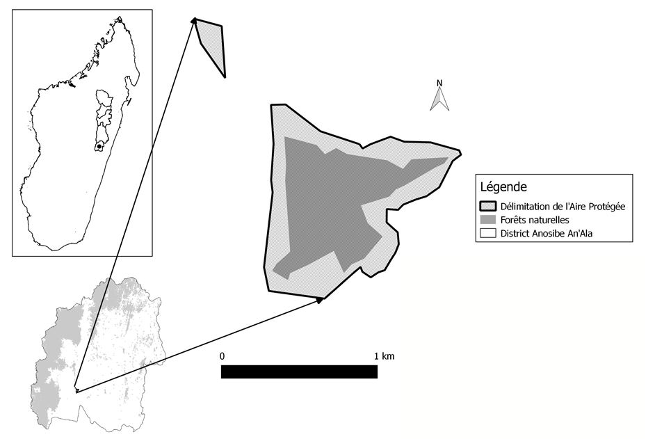
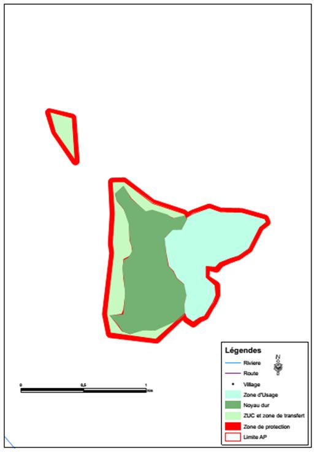

CNLEGIS
CNLEGIS

| DATE(S) | DATE TEXTES | TEXTE(S) | TYPE | NUM TEXTE | NUM | OBJET | OBJET MG | NUM JO | DATE JO | DATE JO FR | PAGE JO | ETAT | NOTE(S) | NOTES MG | DOC PDF FR | DOC PDF MG | MINISTERE(S) | id | HTML FR | HTML MG | ||||||||||||||||||||||||||||||||||||||||||||||||||||||||||||||||||||||||||||||||||||||||||||||||||||||||||||||||||||||||||||||||||||||||||||||||||||||||||||||||||||||||||||||||||||||||||||||||||||||||||||||||||||||||||||||||||||||||||||||||||||||||||||||||||||||||||||||||||||||||||||||||||||||||||||||||||||||||||||||||||||||||||||||||||||||||||||||||||||||||||||||||||||||||||||||||||||||||||||||||||||||||||||||||||||||||||||||||||||||||||||||||||||||||||||||||||||||||||||||||||||||||||||||||||||||||||||||||||||||||||||||||||||||||||||||||||||||||||||||||||||||||||||||||||||||||||||||||||||||||||||||||||||||||||||||||||||||||||||||||||||||||||||||||||||||||||||||||||||||||||||||||||||||||||||||||||||
|---|---|---|---|---|---|---|---|---|---|---|---|---|---|---|---|---|---|---|---|---|---|---|---|---|---|---|---|---|---|---|---|---|---|---|---|---|---|---|---|---|---|---|---|---|---|---|---|---|---|---|---|---|---|---|---|---|---|---|---|---|---|---|---|---|---|---|---|---|---|---|---|---|---|---|---|---|---|---|---|---|---|---|---|---|---|---|---|---|---|---|---|---|---|---|---|---|---|---|---|---|---|---|---|---|---|---|---|---|---|---|---|---|---|---|---|---|---|---|---|---|---|---|---|---|---|---|---|---|---|---|---|---|---|---|---|---|---|---|---|---|---|---|---|---|---|---|---|---|---|---|---|---|---|---|---|---|---|---|---|---|---|---|---|---|---|---|---|---|---|---|---|---|---|---|---|---|---|---|---|---|---|---|---|---|---|---|---|---|---|---|---|---|---|---|---|---|---|---|---|---|---|---|---|---|---|---|---|---|---|---|---|---|---|---|---|---|---|---|---|---|---|---|---|---|---|---|---|---|---|---|---|---|---|---|---|---|---|---|---|---|---|---|---|---|---|---|---|---|---|---|---|---|---|---|---|---|---|---|---|---|---|---|---|---|---|---|---|---|---|---|---|---|---|---|---|---|---|---|---|---|---|---|---|---|---|---|---|---|---|---|---|---|---|---|---|---|---|---|---|---|---|---|---|---|---|---|---|---|---|---|---|---|---|---|---|---|---|---|---|---|---|---|---|---|---|---|---|---|---|---|---|---|---|---|---|---|---|---|---|---|---|---|---|---|---|---|---|---|---|---|---|---|---|---|---|---|---|---|---|---|---|---|---|---|---|---|---|---|---|---|---|---|---|---|---|---|---|---|---|---|---|---|---|---|---|---|---|---|---|---|---|---|---|---|---|---|---|---|---|---|---|---|---|---|---|---|---|---|---|---|---|---|---|---|---|---|---|---|---|---|---|---|---|---|---|---|---|---|---|---|---|---|---|---|---|---|---|---|---|---|---|---|---|---|---|---|---|---|---|---|---|---|---|---|---|---|---|---|---|---|---|---|---|---|---|---|---|---|---|---|---|---|---|---|---|---|---|---|---|---|---|---|---|---|---|---|---|---|---|---|---|---|---|---|---|---|---|---|---|---|---|---|---|---|---|---|---|---|---|---|---|---|---|---|---|---|---|---|---|---|---|---|---|---|---|---|---|---|---|---|---|---|---|---|---|---|---|---|---|---|---|---|---|---|---|---|---|---|---|---|---|---|---|---|---|---|---|---|---|---|---|---|---|---|---|---|---|---|---|---|---|---|---|---|---|---|---|---|---|---|---|---|---|---|---|---|---|---|---|---|---|---|---|---|---|---|---|---|---|---|---|---|---|---|---|---|---|---|---|---|---|---|---|---|---|---|---|---|---|---|---|---|---|---|---|---|---|---|---|---|---|---|---|---|---|---|---|---|---|---|---|---|---|---|---|---|---|---|---|---|---|---|---|---|---|---|---|---|---|---|---|---|---|---|---|---|---|---|---|---|---|---|---|---|---|---|---|---|---|---|---|---|---|---|---|---|---|---|---|---|---|---|---|---|---|---|---|---|---|---|---|---|---|---|---|---|---|---|---|---|---|---|---|---|---|---|---|---|---|---|---|---|---|---|---|---|---|---|
| 21 Avril 2015 | 21-04-2015 | Décret n° 2015-716 Portant création de l'Aire protégée dénommée "Marolambo" et de sa zone de protection sise dans le District de Marolambo, Région Atsinanana, le District d'Antanifotsy, Région Vakinankaratra, les Districts de Fandriana et d'Ambositra, Région Amoron'i Mania et les Districts de Nosy-Varika et d'Ifanadiana, Région Vatovavy Fitovinany. N° J.O: 3682 Date J.O: 02 Mai 2016 Page J.O: 2362ETAT : En vigueur Voir le texte (VF) | Décret | 2015-716 | D2015-716 | Portant création de l'Aire protégée dénommée "Marolambo" et de sa zone de protection sise dans le District de Marolambo, Région Atsinanana, le District d'Antanifotsy, Région Vakinankaratra, les Districts de Fandriana et d'Ambositra, Région Amoron'i Mania et les Districts de Nosy-Varika et d'Ifanadiana, Région Vatovavy Fitovinany. | 3682 | 02 Mai 2016 | 02-05-2016 | 2362 | En vigueur | undefined | ,MINISTERE DE L'ENVIRONNEMENT, DE L'ECOLOGIE ET DES FORETS (MEEF) | 44721 |
REPOBLIKAN’I MADAGASIKARA FITIAVANA-TANINDRAZANA-FANDROSOANA --------------------------- MINISTERE DE L’ENVIRONNEMENT, DE L’ECOLOGIE, DE LA MER ET DES FORETS --------------------------- DECRET N°2015-716 Portant création DE L’AIRE PROTEGEE DENOMMEE « Marolambo » et de sa Zone de Protection sisE dans le District de Marolambo, Région Atsinanana, le District d’Antanifotsy, Région Vakinankaratra, les Districts de Fandriana et d’Ambositra, Région Amoron’i Mania et les Districts de Nosy-Varika et d’Ifanadiana, Région Vatovavy Fitovinany ----------------------------------- LE PREMIER MINISTRE, CHEF DU GOUVERNEMENT,
Sur proposition du Ministre de l’Environnement, de l’Ecologie, de la Mer et des Forêts ;
En Conseil de Gouvernement, DECRETE
TITRE I : DE LA CREATION ET DE LA DELIMITATION DE L’AIRE PROTEGEE
Article premier : Conformément aux dispositions de l’article 2 et 13 de la loi n°2015-005 du 26 février 2015 portant refonte Code de Gestion des Aires Protégées, il est créé une Aire Protégée dénommée « Marolambo »,site d’intérêt biologique et écologique du Corridor Fandriana-Marolambo (COFAM), à cheval sur les six Districts à savoir : de Marolambo, Région Atsinanana ; d’Antanifotsy, Région Vakinankaratra ; de Fandriana et d’Ambositra, Région Amoron’i Mania ; de Nosy-Varika et d’Ifanadiana, Région Vatovavy Fitovinany, est une AIRE PROTEGEE dans la catégorie de « Parc National » équivalente de la Catégorie II selon la classification de l’Union Internationale pour la Conservation de la Nature.
Le Parc National de Marolambo est d’une superficie totale de QUATRE VINGT QUINZE MILLE SOIXANTE TROIS hectares (95 063 Ha) environ
Les coordonnées Laborde et description des points sommets et de la portion de limites entre deux points de la limite externe du Parc National de Marolambo», délimitées par les points sommets de T1 à T245, sont respectivement définies et décrites en annexes 4A et 4B du présent décret
Article 2 : La carte de localisation du Parc National de Marolambo est donnée en annexe 1 et les cartes de repérage et de zonage sont respectivement en annexes 2 et 3 du présent décret.
Le périmètre de l’Aire Protégée dépendant du domaine privé de l’Etat doit être immatriculé au nom de l’Etat Malagasy aux fins de la délivrance d’un titre foncier auquel il donne le nom de « Parc National de Marolambo » suivant la procédure de sécurisation foncière en vigueur.
Le Ministère chargé des Aires Protégées doit déclencher le processus d’immatriculation auprès de la Direction Générale chargée des Services Fonciers, dès la publication au Journal Officiel du présent décret.
TITRE II : DE L’OBJECTIF DE GESTION DE L’AIRE PROTEGEE
Article 3: L’objectif global du Parc National de Marolambo est de conserver et de gérer de manière soutenue la biodiversité par la mise en place d’un système de gestion durable de l’écosystème aux fins écologiques, spirituelles, scientifiques, éducatives, récréatives ou écotouristiques au bénéfice des populations riveraines, Les objectifs spécifiques du Parc National de Marolambo sont :
TITRE III : DE L’ORGANISATION DE GESTION DE L’AIRE PROTEGEE
Article 4 Conformément aux articles 8, 45 et 46 de la loi n° 2015-005 du 26 février 2015 portant refonte du Code de Gestion des Aires Protégées, le Parc National de Marolambo fait partie des Aires Protégées gérées par l’Organisme chargé de la gestion du réseau national des Aires Protégées « Madagascar National Parks » et ce, selon le Plan d’Aménagement et de Gestion dûment validé par le département Ministériel chargé des Aires Protégées.
TITRE IV : DE LA GOUVERNANCE DE L’AIRE PROTEGEE
Article 5 : Le mode de gouvernance qui s’applique au Parc National de Marolambo est la cogestion de type collaboratif entre le gestionnaire du Parc National de Marolambo, les communautés locales et les parties prenantes.
Conformément au principe de gouvernance du Système des Aires Protégées de Madagascar tel que défini dans l’article 6 de la loi n°2015-005 du 26 février 2015, le gestionnaire du Parc National de Marolambo doit, dans le cadre de gestion dudit Parc National:
TITRE V : DE L’AMENAGEMENT DE L’AIRE PROTEGEE
Article 6 : Le Parc National de Marolambo est constitué de :
Le Parc National de Marolambo dispose de douze (12) blocs de Noyaux Durs d’une superficie totale 15 927 hectares environ ci-après définis:
Les coordonnées Laborde et description des points sommets et de la portion de limites entre deux points de la limite externe de chacune des douze (12) blocs de Noyaux Durs composant le Parc National de Marolambo sont définies et décrites en annexes 5 A et 5 B du présent décret.
Le Parc National de Marolambo dispose d’une (01) Zone Tampon d’une superficie totale de 79 136 hectares environ.
Sa limite EXTERNE coïncide avec la limite externe du Parc National de Marolambo définie et décrite en annexes 3A et 3 B du présent décret et,
Sa limite INTERNE coïncide avec la limite externe des douze (12) blocs de Noyaux Durs du Parc National de Marolambo définie et décrite en annexes 4A et 4 B du présent décret.
Article 7 : Pour assurer l’intégrité du Parc National de Marolambo, d’autres zones telles que Zones de Service, Zones d’Utilisation Contrôlée, Zones d’Utilisation Durable, Zones d’Occupation Contrôlée et Zones spécialement affectées à d’autres activités (Recherche, Restauration etc…) peuvent être également définies au niveau de la Zone Tampon en tant que besoin dans le Plan d’Aménagement et de Gestion du Parc National de Marolambo,dument validé par le Ministère chargé des Aires Protégées. Les points sommets, les limites et le mode de gestion de ces différentes zones seront fixés par voie d’arrêté du Ministère chargé des Aires Protégées.
Article 8 : Le Parc National de Marolambo est entouré d’une (01) Zone de Protection d’une superficie totale de 99 079 hectares environ, délimitée par les points sommets de P1 à P50, sises dans les vingt deux (22) Communes de: Amboasary ; Ambohimilanja ; Ambodivoangy ; Ambalapaiso ; Ambatofisaka ; Anosiarivo ; Sahakevo ; Ambodinonoka ; Antanambao ; Angodongodona ; Maroharatra ; Fasintsara ; Vohidahy ; Alakamisy-Ambohimahazo ; Mahazoarivo ; Fiadanana ; Ankarinoro ; Betsimisotra ; Miarinavaratra ; Antsampandrano ; Ambohitompoina ; Belanitra.
Les coordonnées Laborde et description des points sommets et de la portion de limites entre deux points de la limite externe de la Zone de Protection du Parc National de Marolambo sont décrites et définies en annexes 6 A et 6 B du présent décret.
TITRE VI : DE LA REGLE DE GESTION DE L’AIRE PROTEGEE
Article 9: Les règles de gestion de différentes zones du Parc National de Marolambo, sont définies dans le Plan d’Aménagement et de Gestion qui comporte également les mesures d’accompagnement nécessaires pour contribuer au développement de la région. Article 10 : Outre les cas prévus et réprimés par la loi n°2015-005 du 26 février 2015 portant refonte du Code de Gestion des Aires Protégées, les activités suivantes sont strictement interdites:
La chasse et la pêche hormis la pêche traditionnelle dans la Zone Tampon, le défrichement, l’exploitation forestière et agricole, toutes activités extractives, toute fouille ou prospection, sondage, terrassement, tous travaux tendant à modifier l’aspect de terrain ou de la végétation, toute pollution des eaux et de manière générale, tout acte de nature à apporter des perturbations à la faune ou à la flore, toute introduction d’espèces botaniques ou zoologiques, soit indigènes, soit importées, sauvages ou domestiques.
Article 11 : Hormis les cas prévus et réprimés par la loi n°2015-005 du 26 février 2015 portant refonte du Code de gestion des Aires Protégées, les activités suivantes sont strictement réglementés et ce, conformément au règlement intérieur établi par le gestionnaire du Parc National de Marolambo et au cahier de charges stipulés dans les articles 45 et 47 de la loi précitée :
Article 12 : Hormis les cas prévus et réprimés par la loi n° 2015-005 du 26 février 2015 portant refonte du Code de Gestion des Aires Protégées, toutes activités compatibles au Plan d’Aménagement et de Gestion du Parc National de Marolambo et respectant le règlement intérieur établi par le gestionnaire du Parc National de Marolambo, sont autorisées notamment:
Toutefois, l’entrée des touristes dans l’enceinte de ces sites culturels ou cultuels ne peut se faire que sur autorisation préalable et sous le guide des autorités traditionnelles compétentes.
Toutefois, après l’opération, ils sont tenus d’informer le gestionnaire du Parc National de Marolambo de leurs actions et des résultats de l’opération qui ne risquent pas d’entraver la poursuite des investigations et de la procédure. Le gestionnaire du Parc National de Marolambo ne peut en aucun cas être tenu responsable de la perte des traces des troupeaux volés à l’intérieur du Parc National de Marolambo ni des échecs dans la poursuite.
Ces types d’activités doivent être menés sous le contrôle et la direction du gestionnaire du Parc National de Marolambo. Article 13: Conformément aux dispositions de la loi n° 2015-005 du 26 février 2015 portant refonte Code de Gestion des Aires Protégées, toutes activités, autres que celles traditionnellement menées par les communautés locales dans les Zones de Protection définies dans l’article 8 du présent décret, telles que les activités de pêche, touristiques, navigation, agricoles et pastorales ou d’autres types d’activités n’entraînant pas de dommages irréparables sur le Parc National de Marolambo, sont autorisées à titre exceptionnel par le Gestionnaire du Parc National de Marolambo.
Toutefois, sur toute l’étendue de la Zone de Protection du Parc National de Marolambo, définie dans l’article 8 du présent décret, les concessionnaires des Secteurs pêche, miniers, pétroliers et forestiers, bénéficiant des droits acquis antérieurs à la date de sortie de l’arrêté interministériel n°52005/10 du 20 décembre 2010 sus visé portant mise en protection temporaire du Parc National de Marolambo, peuvent mener dans les règles de l’art leurs activités découlant desdits droits de pêche, miniers, pétroliers et forestiers et ce, dans le respect de la règlementation en vigueur notamment dans le décret MECIE,
Article 14: L’accès de tous visiteurs au niveau du Parc National de Marolambo à des fins touristiques et de recherches scientifiques est soumis au paiement des droits d’entrée, des droits de recherche, des
TITRE VII : DE LA REPRESSION DES INFRACTIONS COMMISES DANS L’AIRE PROTEGEE
Article 15: Les infractions aux dispositions du présent décret sont constatées et punies conformément aux dispositions de la loi n° 2015-005 du 26 février 2015 portant refonte Code de Gestion des Aires Protégées et, aux autres textes en vigueur en cas de silence de la loi COAP précitée.
TITRE VIII : DISPOSITIONS FINALES Article 16 : En raison de l’urgence et conformément aux dispositions des articles 4 et 6 alinéa 2 de l’Ordonnance n° 62-041 du 19 septembre 1962 relative aux dispositions générales de droit interne et de droit international privé, le présent décret entre immédiatement en vigueur dès sa publication par voie radiodiffusée ou télévisée, indépendamment de son insertion au Journal officiel de la République. Article 18 : Le Ministre d’Etat chargé des Projets Présidentiels, de l’Aménagement du Territoire et de l’Equipement ; Le Ministre auprès de la Présidence chargé des Mines et du Pétrole ; Le Ministre de la Justice, Garde des Sceaux ; Le Ministre de l’Intérieur et de la Décentralisation ; Le Ministre d’Agriculture ; Le Ministre des Travaux Publics ; Le Ministre du Tourisme, des Transports et de la Météorologie ; Le Ministre de l’Energie et des Hydrocarbures ; Le Ministre de I ’Enseignement Supérieur et de la Recherche Scientifique ; Le Ministre de l’Environnement, de l’Ecologie, de la Mer et des Forêts ; Le Ministre des Ressources Halieutiques et de la Pêche ; Le Ministre de l’Elevage ; Le Ministre de la Culture et de l’Artisanat ; Le Ministre de la Communication et des Relations avec les lnstitutions ; Le Ministre de la Population, de la Protection Sociale et de la Promotion de la Femme et Le Secrétaire d’Etat auprès du Ministère de la Défense Nationale chargé de la Gendarmerie sont chargés, chacun en ce qui le concerne, de l’exécution du présent décret qui sera publié au Journal Officiel de la République de Madagascar.
Antananarivo, le 21 avril 2015
Par Le Premier Ministre, Général de Brigade Aérienne RAVELONARIVO Jean Chef du Gouvernement
ANNEXE: | |||||||||||||||||||||||||||||||||||||||||||||||||||||||||||||||||||||||||||||||||||||||||||||||||||||||||||||||||||||||||||||||||||||||||||||||||||||||||||||||||||||||||||||||||||||||||||||||||||||||||||||||||||||||||||||||||||||||||||||||||||||||||||||||||||||||||||||||||||||||||||||||||||||||||||||||||||||||||||||||||||||||||||||||||||||||||||||||||||||||||||||||||||||||||||||||||||||||||||||||||||||||||||||||||||||||||||||||||||||||||||||||||||||||||||||||||||||||||||||||||||||||||||||||||||||||||||||||||||||||||||||||||||||||||||||||||||||||||||||||||||||||||||||||||||||||||||||||||||||||||||||||||||||||||||||||||||||||||||||||||||||||||||||||||||||||||||||||||||||||||||||||||||||||||||||||||||||||||
| 21 Avril 2015 | 21-04-2015 | Décret n° 2015-717 Portant création de l'Aire Protégée dénommée "Nosy Ve Androka" et de sa zone de protection, sise dans le District de Toliara-II et d'Ampanihy Ouest, Région Atsimo Andrefana. N° J.O: 3682 Date J.O: 02 Mai 2016 Page J.O: 2391ETAT : En vigueur Voir le texte (VF) | Décret | 2015-717 | D2015-717 | Portant création de l'Aire Protégée dénommée "Nosy Ve Androka" et de sa zone de protection, sise dans le District de Toliara-II et d'Ampanihy Ouest, Région Atsimo Andrefana. | 3682 | 02 Mai 2016 | 02-05-2016 | 2391 | En vigueur | undefined | ,MINISTERE DE L'ENVIRONNEMENT, DE L'ECOLOGIE, DE LA MER ET DES FORETS (MEEMF) | 44722 |
REPOBLIKAN’I MADAGASIKARA FITIAVANA-TANINDRAZANA-FANDROSOANA ---------------------------------- MINISTERE DE L’ENVIRONNEMENT, DE L’ECOLOGIE, DE LA MER ET DES FORETS ----------------------------------
DECRET N°2015-717 Portant création de l’Aire Protégée dénommée « Nosy Ve Androka » et de sa Zone de Protection , sise dans les Districts de Toliara II et d’Ampanihy Ouest, Région Atsimo Andrefana -----------------------------------
LE PREMIER MINISTRE, CHEF DU GOUVERNEMENT,
Sur proposition du Ministre de l’Environnement, de l’Ecologie, de la Mer et des Forêts ;
En Conseil de Gouvernement, DECRETE
TITRE I : DE LA CREATION ET DE LA DELIMITATION DE L’AIRE PROTEGEE
Article premier : Conformément aux dispositions de l’article 2 et 13 de la loi n°2015-005 du 26 février 2015 portant refonte Code de Gestion des Aires Protégées, il est créé une Aire Protégée dénommée « Nosy Ve Androka »,site d’intérêt biologique marin et côtier, allant de Beheloke-bas, Commune Rurale de Beheloke (au nord) jusqu’à Fanambosa, Commune Rurale d’Androka (au Sud) en passant par Itampolo, à cheval sur le District de Toliara II et celui d’Ampanihy Ouest, Région Atsimo Andrefana, est une AIRE PROTEGEE dans la catégorie de « Parc National », équivalente de la Catégorie II selon la classification de l’Union Internationale pour la Conservation de la Nature.
Le Parc National de Nosy Ve Androka est d’une superficie totale de QUATRE VINGT ONZE MILLE QUATRE CENT QUARANTE CINQ hectares (91 445 ha) environ.
Les coordonnées Laborde et description des points sommets et de la portion de limites entre deux points de la limite externe du Parc National de Nosy Ve Androka, sont respectivement définies et décrites en annexes 4A et 4B du présent décret.
Article 2 : La carte de localisation du Parc National de Nosy Ve Androka est donnée en annexe 1 et les cartes de repérage et de zonage sont respectivement en annexes 2 et 3 du présent décret.
TITRE II : DE L’OBJECTIF DE GESTION DE L’AIRE PROTEGEE
Article 3: L’objectif global du Parc National de Nosy Ve Androka est de conserver et de gérer de manière soutenue la biodiversité répartie et incluse dans toute l’étendue de l’Aire Protégée Marine.
Les objectifs spécifiques du Parc National de Nosy Ve Androka sont :
TITRE III : DE L’ORGANISATION DE GESTION DE L’AIRE PROTEGEE
Article 4: Conformément aux articles 8 45 et 46 de la loi n° 2015-005 du 26 février 2015 portant refonte du Code de Gestion des Aires Protégées, le Parc National de Nosy Ve Androka fait partie des Aires Protégées gérées par l’Organisme chargé de la gestion du réseau national des Aires Protégées « Madagascar National Parks » et ce, selon le Plan d’Aménagement et de Gestion dûment validé par le département Ministériel chargé des Aires Protégées.
TITRE IV : DE LA GOUVERNANCE DE L’AIRE PROTEGEE Article 5 : Le mode de gouvernance qui s’applique au Parc National de Nosy Ve Androka est la cogestion de type collaboratif entre le gestionnaire du Parc National de Nosy Ve Androka, les communautés locales et les parties prenantes.
Conformément au principe de gouvernance du Système des Aires Protégées de Madagascar tel que défini dans l’article 6 de la loi n°2015-005 du 26 février 2015, le gestionnaire du Parc National de Nosy Ve Androka doit, dans le cadre de gestion dudit Parc National:
TITRE V : DE L’AMENAGEMENT DE L’AIRE PROTEGEE Article 6 : Le Parc National de Nosy Ve Androka est composé de huit (08) parcelles marines et côtières définies ci-après:
Les coordonnées Laborde et description des points sommets et des portions de limites entre deux points sommets de la limite externe de chacune des parcelles composant le Parc National de Nosy Ve Androka sont respectivement définies et décrites en annexes 4 A et 4 B du présent décret.
Article 7 : Le Parc National de Nosy Ve Androka est constitué de :
Les Parc National de Nosy Ve Androka dispose de dix (10) blocs de Noyaux Durs d’une superficie totale de 23.139 hectares environ ci-après définis:
Les coordonnées Laborde et description des points sommets et des portions de limites entre deux points sommets de la limite externe de chacun de ces dix (10)Blocs de Noyaux Durs composant le Parc National de Nosy Ve Androka sont respectivement définies et décrites en annexes 5 A et 5 B du présent décret.
Le Parc National de Nosy Ve Androka dispose, autour de Noyau(x) Dur(s) de chaque parcelle, des Zones Tampons d’une superficie totale de 68.306 hectares environ. Ces Zones Tampons sont délimitées entre les limites externes du Parc National et les limites des blocs de Noyaux Durs.
Les coordonnées Laborde et description des points sommets et limites de ces Zones Tampons sont décrites et définies en annexe 6 du présent décret.
Article 8 : Pour assurer l’intégrité du Parc National de Nosy Ve Androka, d’autres zones telles que Zones de Service, Zones d’Utilisation Contrôlée, Zones d’Utilisation Durable, Zones de Refuge et Zones spécialement affectées pour l’amarrage et les lignes d’accès des bateaux et à d’autres activités (Recherche, Restauration, etc…) peuvent être également définies au niveau des Zones Tampons définies dans l’article 4, en tant que besoin dans le Plan d’Aménagement et de Gestion du Parc National de Nosy Ve Androka dûment validé par le Ministère chargé des Aires Protégées. Les points sommets, les limites et le mode de gestion de ces différentes zones seront fixés par voie d’arrêté du Ministère chargé des Aires Protégées. Article 9 : Le Parc National de Nosy Ve Androka est entouré de quatre (4) portions de Zones de Protection d’une superficie totale de 169.749 hectares environ définies ci-après :
Les coordonnées Laborde et description des points sommets et des portions de limites entre deux points sommets de la limite externe de chacune de ces quatre (04) portions de Zones de Protection du Parc National de NosyVe Androka sont respectivement décrites et définies en annexes 7 A et 7 B du présent décret. TITRE VI : DE LA REGLE DE GESTION DE L’AIRE PROTEGEE Article 10 : Les règles de gestion de différentes zones du Parc National de Nosy Ve Androka, sont définies dans le Plan d’Aménagement et de Gestion qui comporte également les mesures d’accompagnement nécessaires pour contribuer au développement de la région.
Pour assurer l’intégrité du Parc National de Nosy Ve Androka, le principe de « Noyau Dur marin tournant » est institué au niveau des Noyaux Durs définis dans l’article 7 et ce, suivant une rotation précisée dans le Plan d’Aménagement et de Gestion dument validé par le Ministère chargé des Aires Protégées. Article 11 : Outre les cas prévus et réprimés par la loi n° 2015-005 du 26 février 2015 portant refonte Code de gestion des Aires Protégées, les activités suivantes sont strictement interdites :
Article 12 : Hormis les cas prévus et réprimés par la loi n° 2015-005 du 26 février 2015 portant refonte Code de gestion des Aires Protégées, les activités suivantes sont strictement réglementées au niveau des Huit (8) parcelles du Parc National de Nosy Ve Androka stipulées dans l’article 6 et ce, conformément au règlement intérieur établi par le gestionnaire du Parc National de Nosy Ve Androka et au cahier de charges stipulés dans les articles 45 et 47 de la loi précitée: Sur toute l’étendue du Parc National de Nosy Ve Androka définie dans l’article 6:
Article 13 : Hormis les cas prévus et réprimés par la loi n° 2015-005 du 26 février 2015 portant refonte Code de gestion des Aires Protégées, toutes activités compatibles au Plan d’Aménagement et de Gestion du Parc National de Nosy Ve Androka et respectant le règlement intérieur établi par le gestionnaire du Parc National de Nosy Ve Androka, sont autorisées notamment:
Ces types d’activités doivent être menés sous le contrôle et la direction du gestionnaire du Parc National de Nosy Ve Androka.
Article 14: Conformément aux dispositions de la loi n° 2015-005 du 26 février 2015 portant refonte Code de Gestion des Aires Protégées, toutes activités, autres que celles traditionnellement menées par les communautés locales dans les Zones de Protection définies dans l’article 9 du présent décret, telles que les activités de pêche, touristiques, navigation, agricoles et pastorales ou d’autres types d’activités n’entraînant pas de dommages irréparables sur le Parc National de Nosy Ve Androka, sont autorisées à titre exceptionnel par le Gestionnaire du Parc National de Nosy Ve Androka.
Toutefois, sur toute l’étendue des Zones de Protection du Parc National de Nosy Ve Androka, les concessionnaires des Secteurs pêche, miniers, pétroliers et forestiers, bénéficiant des droits acquis antérieurs à la date de sortie de l’arrêté interministériel n°52005/10 du 20 décembre 2010 sus visé portant mise en protection temporaire du Parc National de Nosy Ve Androka, peuvent mener dans les règles de l’art leurs activités découlant desdits droits de pêche, miniers, pétroliers et forestiers et ce, dans le respect de la règlementation en vigueur notamment dans le décret MECIE,
Article 15: L’accès de tous visiteurs au niveau du Parc National de Nosy Ve Androka à des fins touristiques et de recherches scientifiques est soumis au paiement des droits d’entrée, des droits de recherche, des droits de propriété intellectuelle, des droits de filmage dont les modalités de perception sont fixées par voie réglementaire, tout en respectant le règlement intérieur et les normes, selon un code de conduite, instaurés par le gestionnaire du Parc National de Nosy Ve Androka.
TITRE VII : DE LA REPRESSION DES INFRACTIONS COMMISES DANS L’AIRE PROTEGEE Article 16: Les infractions aux dispositions du présent décret sont constatées et punies conformément aux dispositions de la loi n° 2015-005 du 26 février 2015 portant refonte Code de Gestion des Aires Protégées et, aux autres textes en vigueur en cas de silence de la loi COAP précitée.
TITRE VIII : DISPOSITIONS FINALES Article 17 : En raison de l’urgence et conformément aux dispositions des articles 4 et 6 alinéa 2 de l’Ordonnance n° 62-041 du 19 septembre 1962 relative aux dispositions générales de droit interne et de droit international privé, le présent décret entre immédiatement en vigueur dès sa publication par voie radiodiffusée ou télévisée, indépendamment de son insertion au Journal officiel de la République.
Article 18 : Le Ministre d’Etat chargé des Projets Présidentiels, de l’Aménagement du Territoire et de l’Equipement ; Le Ministre auprès de la Présidence chargé des Mines et du Pétrole ; Le Ministre de la Justice, Garde des Sceaux ; Le Ministre de l’Intérieur et de la Décentralisation ; Le Ministre d’Agriculture ; Le Ministre des Travaux Publics ; Le Ministre du Tourisme, des Transports et de la Météorologie ; Le Ministre de l’Energie et des Hydrocarbures ; Le Ministre de I ’Enseignement Supérieur et de la Recherche Scientifique ; Le Ministre de l’Environnement, de l’Ecologie, de la Mer et des Forêts ; Le Ministre des Ressources Halieutiques et de la Pêche ; Le Ministre de l’Elevage ; Le Ministre de la Culture et de l’Artisanat ; Le Ministre de la Communication et des Relations avec les lnstitutions ; Le Ministre de la Population, de la Protection Sociale et de la Promotion de la Femme et Le Secrétaire d’Etat auprès du Ministère de la Défense Nationale chargé de la Gendarmerie sont chargés, chacun en ce qui le concerne, de l’exécution du présent décret qui sera publié au Journal Officiel de la République de Madagascar. Antananarivo, le 21 avril 2015
Par Le Premier Ministre, Général de Brigade Aérienne RAVELONARIVO Jean Chef du Gouvernement
ANNEXE: | |||||||||||||||||||||||||||||||||||||||||||||||||||||||||||||||||||||||||||||||||||||||||||||||||||||||||||||||||||||||||||||||||||||||||||||||||||||||||||||||||||||||||||||||||||||||||||||||||||||||||||||||||||||||||||||||||||||||||||||||||||||||||||||||||||||||||||||||||||||||||||||||||||||||||||||||||||||||||||||||||||||||||||||||||||||||||||||||||||||||||||||||||||||||||||||||||||||||||||||||||||||||||||||||||||||||||||||||||||||||||||||||||||||||||||||||||||||||||||||||||||||||||||||||||||||||||||||||||||||||||||||||||||||||||||||||||||||||||||||||||||||||||||||||||||||||||||||||||||||||||||||||||||||||||||||||||||||||||||||||||||||||||||||||||||||||||||||||||||||||||||||||||||||||||||||||||||||||||
| 21 Avril 2015 | 21-04-2015 | Décret n° 2015-722 Portant création de l'Aire protégée dénommée "Ankivonjy", District Ambanja, Région Diana. N° J.O: 3789 Date J.O: 11 Décembre 2017 Page J.O: 7159ETAT : En vigueur Voir le texte (VF) | Décret | 2015-722 | D2015-722 | Portant création de l'Aire protégée dénommée "Ankivonjy", District Ambanja, Région Diana. | 3789 | 11 Décembre 2017 | 11-12-2017 | 7159 | En vigueur | undefined | MINISTERE DE L'ENVIRONNEMENT, DE L'ECOLOGIE, DE LA MER ET DES FORETS (MEEMF) | 45722 | REPOBLIKAN’I MADAGASIKARA FITIAVANA-TANINDRAZANA-FANDROSOANA --------------------------- MINISTERE DE L’ENVIRONNEMENT DE L’ECOLOGIE, DE LA MER ET DES FORETS --------------------------- DECRET N°2015-722 Portant création de l’Aire Protégée DÉNOMMÉE « Ankivonjy » District Ambanja, Région Diana ----------------------------------- LE PREMIER MINISTRE, CHEF DU GOUVERNEMENT,
Sur proposition du Ministre de l’Environnement, de l’Ecologie, de la Mer et des Forêts
En Conseil de Gouvernement,
DECRETE
TITRE I : DE LA CREATION ET DELIMITATION DE L’AIRE PROTEGEE
Article premier : Conformément aux dispositions de l’article 2 et de l’article 19 de loi n° 2015-005 du 26 février 2015 portant refonte du Code de Gestion des Aires Protégées, il est créé une Aire Protégée dénommée « Ankivonjy », site d’intérêt biologique marin et côtier, de catégorie « Paysage Harmonieux Protégé », équivalente de la Catégorie V selon la classification de l’Union Internationale pour la Conservation de Nature. L’Aire Protégée est d’une superficie totale CENT TRENTE NEUF MILLE QUATRE CENT NEUF HECTARES (139 409 ha) environ, sis à 50 kilomètres au sud-ouest de Nosy Be, Commune Rurale de Bemaneviky-Ouest, District Ambanja, Région Diana. Article 2 : La carte de localisation et de repérage de l’Aire Protégée « Ankivonjy » est donnée en annexe 1 et dans les cartes de zonage en annexes 2A et 2B du présent décret. Les coordonnées Laborde et description des points sommets et de la portion de limites entre deux points sommets de la limite externe de l’Aire Protégée « Ankivonjy » sont décrites et définies respectivement en annexes 3A et 3B du présent décret, délimitées par les points sommets 1 à 6. Le périmètre de l’Aire Protégée dépendant du domaine privé de l’Etat doit être immatriculé au nom de l’Etat Malagasy aux fins de la délivrance d’un titre foncier auquel il donne le nom de « Aire Protégée Ankivonjy » suivant la procédure de sécurisation foncière en vigueur.
Le Ministère chargé des Aires Protégées doit déclencher le processus d’immatriculation auprès de la Direction générale chargée des Services Fonciers, dès la publication au Journal Officiel du présent décret.
L’Aire Protégée « Ankivonjy » n’inclut pas la Nouvelle Aire Protégée Antsoha d’une superficie de 28,5 hectares.
TITRE II : DE L’OBJECTIF DE GESTION DE L’AIRE PROTEGEE Article 3 : Le principal objectif de gestion poursuivi pour l’Aire Protégée « Ankivonjy » est d’assurer la protection et le maintien a? long terme de la biodiversite?, du patrimoine culturel et des services écologiques et promouvoir un développement socioéconomique durable pour contribuer à la réduction de la pauvreté en faveur de la population locale. Les objectifs spécifiques de gestion de l’Aire Protégée « Ankivonjy » sont d’assurer :
TITRE III : DE L’ORGANISATION DE GESTION DE L’AIRE PROTEGEE Article 4 : La Direction Régionale de l’Environnement, de l’Ecologie, de la Mer et des Forêts et la Direction Régionale des Ressources Halieutiques et de la Pêche sont désignées Co-gestionnaire de l’Aire Protégée « Ankivonjy ». La délégation de gestion peut toutefois être accordée par voie réglementaire à une ou des personnes publiques ou privées, laquelle détermine les termes de la délégation, les droits et obligations des parties.
Un Comité d’Orientation et de Suivi (COS), dont les membres sont nommés par arrêté régional, assure le suivi de l’exécution des actions découlant du présent décret. Il est présidé par le Directeur Régional de l’Environnement, de l’Ecologie, de la Mer et des Forêts, et est notamment constitué par des représentants des services techniques déconcentrés des Ministères intéressés ainsi que toutes personnes ou organismes choisis pour leurs compétences particulières.
TITRE IV : DE LA GOUVERNANCE DE L’AIRE PROTEGEE Article 5 : Le mode de gouvernance qui s’applique à l’Aire Protégée « Ankivonjy » est la cogestion de type collaboratif entre le gestionnaire ou le gestionnaire délégué et les communautés locales.
Conformément au principe de gouvernance du Système des Aires Protégées de Madagascar tel que défini dans l’article 6 de la loi n°2015-005 du 26 février 2015, le gestionnaire ou le gestionnaire délégué doit, dans le cadre de gestion de l’Aire Protégée :
TITRE V : DE L’AMENAGEMENT DE L’AIRE PROTEGEE Article 6 : L’Aire Protégée « Ankivonjy » est constituée de :
L’Aire Protégée « Ankivonjy » dispose de quinze (15) blocs des Noyaux Durs, d’une superficie totale de 14 332 Ha ci-après définis :
Les coordonnées Laborde et description des points sommets et de la portion de limites entre deux points de la limite de ces quinze (15) blocs de Noyaux Durs sont décrites et définies respectivement en annexes 4A et 4B du présent décret ».
L’Aire Protégée « Ankivonjy » dispose d’une Zone Tampon d’une superficie totale d’environ de 125 077,5 Ha. Ses points sommets et sa limite extérieure sont ceux de l’Aire Protégée, définis et décrits dans les annexes 3A et 3B. Ses points sommets et sa limite INTERIEURE sont ceux des quinze (15) blocs de Noyaux Durs de l’Aire Protégée « Ankivonjy », définis et décrits dans les annexes 4A et 4B.
Cette Zone Tampon contient trois (03) Zones d’Occupation Contrôlée ou « ZOC » d’une superficie totale d’environ de 184 hectares et d’une (01) Zone d’Utilisation Durable ou « ZUD », d’une superficie totale de 124 883,5 hectares ci-après définie :
Les limites de ces trois (03) ZOC, délimitées par la ligne de la plus haute mer de marée de vives eaux des îles Nosy Iranja Kely, Nosy Iranja Be, Ankazoberaviva, Ankisomany, correspondent à l’intégralité de ces trois (03) Iles.
La ZUD, d’une superficie totale d’environ de 124 883,5hectares, est l’ensemble de la Zone Tampon de l’Aire Protégée « Ankivonjy », hormis les trois (03) ZOC définis et décrits ci-dessus. Ses points sommets et sa limite extérieure sont ceux de l’Aire Protégée « Ankivonjy », définis et décrits dans les annexes 3A et 3B. Sa limite INTERIEURE sont ceux des points sommets des quinze (15) blocs de Noyaux Durs de l’Aire Protégée « Ankivonjy », définis et décrits dans les annexes 4A et 4B et ceux de la ligne de la plus haute mer de marrée de vives eaux au niveau des Iles Nosy Iranja Kely, Nosy Iranja Be, Ankazoberaviva, Ankisomany. L’étendue de la ZOC et de la ZUD peut faire l’objet d’une révision selon les besoins du plan d’aménagement et de gestion (PAG).
TITRE VI : DE LA REGLE DE GESTION DE L’AIRE PROTEGEE
Article 7 : Le plan d’aménagement et de gestion précise les modalités de gestion de l’Aire Protégée « Ankivonjy », lesquelles doivent impliquer la population locale et comporte les mesures d’accompagnement nécessaires pour contribuer au développement socio-économique de la région.
Article 8 : Outre les cas prévus et réprimés par la loi n° 2015-005 du 26 février 2015 portant refonte du Code de Gestion des Aires Protégées, les activités suivantes sont strictement interdites :
Les Noyaux Durs constituent le périmètre de préservation intégrale. Toute activité, toute entrée et toute circulation y sont restreintes et règlementées.
Article 9 : Hormis les cas prévus et réprimés par la loi n° 2015-005 du 26 février 2015 portant refonte du Code de Gestion des Aires Protégées, les activités suivantes sont autorisées etréglementées sur l’étendue de l’Aire Protégée « Ankivonjy » définie dans l’article 6 et ce, conformément au Plan d’aménagement et de Gestion de Ankivonjyet selon un cahier de charges établi entre le gestionnaire et les usagers, tout en respectant le règlement intérieur de l’Aire Protégée.
Article 10 : Conformément aux dispositions de l’article 40 de la loi n°2015-005 du 26 février 2015 portant refonte du Code de gestion des Aires Protégées, en cas de découverte des produits extractifs dans les limites de l’Aire Protégée « Ankivonjy », et dans une perspective d’une cohabitation harmonieuse, il ne pourra être procédé à l’exploitation qu’après modification du zonage interne de l’Aire Protégée. Article 11 : Conformément aux dispositions de à l’article 43 de la loi n°2015-005 du 26 février 2015 portant refonte du Code de Gestion des Aires Protégées, la visite de l’Aire Protégée « Ankivonjy » à des fins touristiques et de recherches scientifiques est soumise selon le cas au paiement des droits d’entrée, des droits de recherche, des droits de propriété intellectuelle, des droits de filmage dont les modalités de perception sont fixées par voie réglementaire, tout en respectant le règlement intérieur instauré par le gestionnaire. La visite des circuits écotouristiques ouverts à cet effet est soumise au service de guidage respectant les normes selon un code de conduite établi par le gestionnaire. Dans une perspective d’une cohabitation harmonieuse, l’accès à l’Aire Protégée « Ankivonjy » pour les titulaires des droits acquis antérieurement à l’officialisation de l’Aire Protégée doit être précédé d’une annonce faite par les titulaires auprès du gestionnaire. A cet effet, un protocole de collaboration peut être établi entre les deux parties.
TITRE VII : DE LA REPRESSION DES INFRACTIONS COMMISES DANS L’AIRE PROTEGEE Article 12: Les infractions aux dispositions du présent Décret sont constatées et punies conformément aux dispositions de la loi n° 2015-005 du 26 février 2015 portant refonte du Code de Gestion des Aires Protégées et aux autres textes en vigueur en cas de silence de ladite loi. TITRE VIII : DISPOSITIONS FINALES Article 13 : Les Annexes cités dans le présent décret en font partie intégrante. Article 13 : En raison de l’urgence et conformément aux dispositions des articles 4 et 6 alinéa 2 de l’Ordonnance n° 62-041 du 19 septembre 1962 relative aux dispositions générales de droit interne et de droit international privé, le présent décret entre immédiatement en vigueur dès sa publication par voie radiodiffusée ou télévisée, indépendamment de son insertion au Journal officiel de la République. Article 14 : Le Ministre d’Etat chargé des Projets Présidentiels, de l’Aménagement du Territoire et de l’Equipement ; Le Ministre auprès de la Présidence chargé des Mines et du Pétrole ; Le Ministre de la Justice, Garde des Sceaux ; Le Ministre de l’Intérieur et de la Décentralisation ; Le Ministre d’Agriculture ; Le Ministre des Travaux Publics ; Le Ministre du Tourisme, des Transports et de la Météorologie ; Le Ministre de l’Energie et des Hydrocarbures ; Le Ministre de I ’Enseignement Supérieur et de la Recherche Scientifique ; Le Ministre de l’Environnement, de l’Ecologie, de la Mer et des Forêts ; Le Ministre des Ressources Halieutiques et de la Pêche ; Le Ministre de l’Elevage ; Le Ministre de la Culture et de l’Artisanat ; Le Ministre de la Communication et des Relations avec les lnstitutions ; Le Ministre de la Population, de la Protection Sociale et de la Promotion de la Femme et Le Secrétaire d’Etat auprès du Ministère de la Défense Nationale chargé de la Gendarmerie sont chargés, chacun en ce qui le concerne, de l’exécution du présent décret qui sera publié au Journal Officiel de la République de Madagascar.
Antananarivo, le 21 Avril 2015
Par Le Premier Ministre, Général de Brigade Aérienne RAVELONARIVO Jean Chef du Gouvernement
ANNEXE: | |||||||||||||||||||||||||||||||||||||||||||||||||||||||||||||||||||||||||||||||||||||||||||||||||||||||||||||||||||||||||||||||||||||||||||||||||||||||||||||||||||||||||||||||||||||||||||||||||||||||||||||||||||||||||||||||||||||||||||||||||||||||||||||||||||||||||||||||||||||||||||||||||||||||||||||||||||||||||||||||||||||||||||||||||||||||||||||||||||||||||||||||||||||||||||||||||||||||||||||||||||||||||||||||||||||||||||||||||||||||||||||||||||||||||||||||||||||||||||||||||||||||||||||||||||||||||||||||||||||||||||||||||||||||||||||||||||||||||||||||||||||||||||||||||||||||||||||||||||||||||||||||||||||||||||||||||||||||||||||||||||||||||||||||||||||||||||||||||||||||||||||||||||||||||||||||||||||||||
| 21 Avril 2015 | 21-04-2015 | Décret n° 2015-715 Portant création définitive de la nouvelle aire protégée "Complexe Tsimembo Manambolomaty", communes rurales : Antsalova, Masoarivo, et Trangahy, Distrist d'Antsalova, Région Melaky. N° J.O: 3788 Date J.O: 04 Décembre 2017 Page J.O: 7063ETAT : En vigueur Voir le texte (VF) | Décret | 2015-715 | D2015-715 | Portant création définitive de la nouvelle aire protégée "Complexe Tsimembo Manambolomaty", communes rurales : Antsalova, Masoarivo, et Trangahy, Distrist d'Antsalova, Région Melaky. | 3788 | 04 Décembre 2017 | 04-12-2017 | 7063 | En vigueur |
| undefined | MINISTERE DE L'ENVIRONNEMENT, DE L'ECOLOGIE ET DES FORETS (MEEF) | 46205 | REPOBLIKAN’I MADAGASIKARA FITIAVANA-TANINDRAZANA-FANDROSOANA --------------------- MINISTERE DE L’ENVIRONNEMENT, DE L’ECOLOGIE, DE LA MERET DES FORETS--------------------- DECRET N°2015-715 PORTANT CREATION DEFINITIVE DE LA NOUVELLE AIRE PROTEGEE « COMPLEXE TSIMEMBO MANAMBOLOMATY », COMMUNES RURALES : ANTSALOVA, MASOARIVO ET TRANGAHY DISTRICT D’ANTSALOVA, REGION MELAKY --------------------- LE PREMIER MINISTRE, CHEF DU GOUVERNEMENT,
Sur proposition du Ministre de l'Environnement, de l’Ecologie, de la Mer et des Forêts ; En Conseil de Gouvernement, DECRETE
TITRE I : DE LA CREATION ET DELIMITATION DE L’AIRE PROTEGEE Article premier : En application de l’article 2 et de l’article 19 de la loi n°2015-005 du 26 février 2015, il est créé une Aire Protégée, dénommée « Complexe Tsimembo Manambolomaty » situé dans les Communes Rurales Antsalova, Masoarivo et Trangahy, District d’Antsalova, Région Melaky, de catégorie « Paysage harmonieux protégé », équivalente de la catégorie V de l’Union Internationale pour la Conservation de la Nature. Elle est composée d’un complexe de forêts, des lacs et des mangroves et s’étendant sur une superficie totale de SOIXANTE DEUX MILLE SEPT CENT QUARANTE CINQ HECTARES (62 745 ha) environ, fait partie du Système des Aires Protégées de Madagascar. Une liste des Fokontany touchés par l’Aire Protégée Complexe Tsimembo Manambolomaty et la carte de localisation sont respectivement données en annexe I A et B du présent décret. Article 2 : La carte de délimitation de l’Aire Protégée comprenant des coordonnées géoréférencées est en annexe II B du présent décret. Les descriptifs des points limites de l’Aire Protégée Complexe Tsimembo Manambolomaty sont définis à l’annexe II A du présent décret. Le périmètre de l’Aire Protégée dépendant du domaine privé de l’Etat doit être immatriculé au nom de l’Etat Malagasy aux fins de la délivrance d’un titre foncier portant le nom de l’Aire Protégée suivant la procédure de sécurisation foncière en vigueur. Le Ministère chargé des Aires Protégées doit déclencher le processus d’immatriculation auprès de la Direction générale chargée des Services Fonciers, dès la publication au Journal Officiel du présent décret.
TITRE II : DE L’OBJECTIF DE GESTION DE L’AIRE PROTEGEE Article 3 : Le principal objectif poursuivi de la gestion de l’Aire Protégée « Complexe Tsimembo Manambolomaty » est de préserver la biodiversité, d’utiliser et valoriser perpétuellement les ressources naturelles afin de contribuer au développement durable de la zone concernée. Les objectifs spécifiques de la gestion de l’Aire Protégée sont de :
TITRE III : DE L’ORGANISATION DE GESTION DE L’AIRE PROTEGEE Article 4 : La Direction Régionale de l’Environnement, de l’Ecologie, de la Mer et des Forêts est désignée gestionnaire de l’Aire Protégée Complexe Tsimembo Manambolomaty. La délégation de gestion temporaire peut toutefois être accordée par voie réglementaire à une ou des personnes publiques ou privées, laquelle détermine les termes de la délégation, les droits et obligations des parties. Un Comité d’Orientation et de Suivi (COS), dont les membres sont nommés par arrêté régional, assure le suivi de l’exécution des actions découlant du présent décret. Il est présidé par le Directeur Régional de l’Environnement, de l’Ecologie, de la Mer et des Forêts, et est notamment constitué par des représentants des services techniques déconcentrés concernés de la Région Melaky, des présidents conseillers des communes concernées ainsi que toutes personnes ou organismes ressources.
TITRE IV : DE LA GOUVERNANCE DE L’AIRE PROTEGEE Article 5 : Le mode de gouvernance qui s’applique au Paysage Harmonieux Protégé « Complexe Tsimembo Manambolomaty » est la cogestion de type collaboratif entre le gestionnaire ou le gestionnaire délégué et les communautés locales. Conformément au principe de gouvernance du Système des Aires Protégées de Madagascar tel que défini dans l’article 6 de la loi n°2015-005 du 26 février 2015, le gestionnaire ou le gestionnaire délégué doit, dans le cadre de gestion de l’Aire Protégée :
TITRE V : DE L’AMENAGEMENT DE L’AIRE PROTEGEE Article 6 : L’Aire Protégée « Complexe Tsimembo Manambolomaty » comprend les unités d’aménagement suivantes : noyau dur, zone tampon composée de Zone d’Occupation Contrôlée, de Zone d’Utilisation Durable, de Zone Culturelle et/ou Cultuelle et de Zone de Protection. L’Aire Protégée est aussi parcourue de quelques sentiers de liaison entre villages et hameaux aux alentours et des layons établis par « Géosource » qui était un opérateur minier visaient à exploiter cette zone. La carte de zonage est donnée en annexe II E du présent décret. Noyaux durs L’Aire Protégée « Complexe Tsimembo Manambolomaty » compte 36 noyaux durs qui se répartissent dans la forêt et lacs des trois communes concernées. Ils ont été définis par rapport aux bordures des lacs, zone de fraie et de reproduction des espèces aquatiques, lieux sacrés et le « Loadrano », aux nids d’Ankoay et par rapport à la forêt dense sèche de Tsimembo et Manambolomaty. Au total, une superficie de 7 897,48 ha, soit 12,58 % de la surface globale de l’Aire Protégée, constitue ces noyaux durs : Les limites et points sommets de ces noyaux durs ainsi leurs superficies respectives sont respectivement données à l'Annexe II C et D du présent décret. Six types de noyaux durs existent au niveau de l’Aire Protégée Complexe Tsimembo Manambolomaty :
- Nid Masama I (18°51’01.8’’S - 44°27’18.7’’E) et nid Masama II (18°51’13.4’’S - 44°27’22.0’’E) dans les forêts de Betsioky et d’Ampisorogna : ils s’étalent sur une superficie de 23,35 ha et se trouvent dans la Commune Rurale d’Antsalova ; - Nid d’Andranolava Nord (19°00’15.9’’S - 44°20’24.0’’E) : le nid s’installe sur un baobab de 564 cm de diamètre et sur une altitude de 23 m, Commune Rurale Masoarivo. Sa position par rapport au bord du lac Andranolava est de 568 m. Ce noyau dur a une superficie de 28,21 ha ; - Nid Betangiriky (19°03’16.1’’S - 44°23’53.3’’E) : le nid s’installe sur un tamarinier de 73 cm de diamètre et sur une altitude de 30 m, Commune Rurale Masoarivo. Sa position par rapport au bord du lac Betangiriky est de 95,2 m ; Betangiriky. Une superficie d’environ 28,21 ha est réservé pour un noyau dur ; - Nid Befotaka II (19°01’36.8’’S - 44°23’58.8’’E) : ce nid se trouve sur un petit îlot au lac Befotaka, Commune Rurale Masoarivo. De plus, il se localise à 7,4 m de la bordure du lac. La superficie de cet îlot est de 2,75 ha ; - Nid Befotaka III (19°00’25.9’’S - 44°24’06.7’’E) : ce noyau dur s’étale sur une superficie de 27,11 ha de large. L’arbre du nid, constitué par un Baobab, se trouve à 218 m de la bordure du lac Befotaka, Commune Rurale Masoarivo ; - Nid Nosindambo (19°01’08.4’’S - 44°24’31.3’’E) : ce nid se localise toujours au lac Befotaka mais sur le plus grand îlot du lac, Commune Rurale Masoarivo. Sa distance par rapport à la bordure du lac est de 101 m. Ce noyau dur est large de 11,13 ha ; - Nid Soamalipo I (19°01’17.4’’S - 44°25’10.0’’E) dans la forêt d’Analalava : le nid est construit sur un grand tamarinier de 955 cm de diamètre et sur une altitude de 37 m. De plus, il se localise à 24,3 m au bord du lac Soamalipo, Commune Rurale Masoarivo. Ce noyau dur s’étale sur une superficie de 16,85 ha ; - Nid Soamalipo II (18°59’09.9’’S - 44°25’18.6’’E) : c’est le nid le plus au nord du lac Soamalipo, Commune Rurale Masoarivo. Il se situe exactement à 117,4 m de la bordure du lac. Ce noyau dur a une superficie de 17,07 ha ; - Nid Soamalipo III (19°01’30.0’’S - 44°25’58.7’’E), dans la forêt d’Antranonankoaibe : l’arbre du nid est constitué par un arbre connu sous le nom de « Handy » ayant un diamètre de 75 cm. Il se situe à 78 m de la bordure du lac Soamalipo, Commune Rurale Masoarivo. Une superficie de 21,13 ha est réservé pour ce noyau dur ; - Nid Ankerika II (19°02’09.7’’S - 44°26’54.8’’E) dans la forêt de Bemiolaky : ce nid est distant de 210 m par rapport au bord du lac Ankerika, Commune Rurale Trangahy. Son altitude est de 24 m. Ce noyau dur s’étale sur une superficie de 25,16 ha ; - Nid Ankerika III (19°00’28.0’’S - 44°27’44.5’’E) dans la forêt d’Ankamotsy : l’arbre du nid connu sous le nom local « Vory » se trouve sur une altitude de 28 m. Sa distance par rapport au bord du lac Ankerika est de 26 m, Commune Rurale Trangahy. Ce noyau dur est large de 8,90 ha ; - Nid Ankerika IV (19°00’34.1’’S- 44°27’09.9’’E) dans la forêt d’Antagnantagna : une espèce de palissandre de 44,5 cm de diamètre constitue l’arbre du nid. La distance du nid par rapport à la bordure du lac Ankerika, Commune Rurale Trangahy, est de 25,8 m. Ce noyau dur longe sur une superficie de 11,50 ha. - Nid Bekofoky V (19°04’06.5’’S - 44°27’31.2’’E) dans la forêt d’Ankibabaky : ce nid est distant de 371 m par rapport à la bordure du lac Bekofoky, Commune Rurale Trangahy. Il est sur un arbre de tamarinier de 103 cm de diamètre et sur une altitude de 23 m. Ce noyau dur est large de 28,21 ha. Comme un oiseau peut changer son lieu de nidification d’un moment à l’autre, un nouveau consensus a lieu entre le gestionnaire ou le gestionnaire délégué et la population environnante en cas de déplacement d’un couple afin de le protéger convenablement, et ainsi de suite.
- Ankerika (19°01’29.6’’S - 44°27’19.8’’E) : cette gîte, ayant une superficie de 13,18 ha, se localise à 5 m de la bordure du lac Ankerika, Commune Rurale Trangahy. Un millier de Fanihy y a été compté. - Mangrove de Beanjavilo (18°59’39.9’’S - 44°14’44.8’’E) : une importante population de Fanihy, dans la Commune Rurale Masoarivo, a été enregistrée dans ce type d’écosystème. Cette population y est déjà conservée naturellement à cause de l’accès pratiquement difficile de cet endroit. Ce noyau dur aune superficie de 28,22 ha. Comme les nids d’Ankoay, des éventuels changements sont possibles pour ces gîtes. Dans ce cas, la même disposition que celle dans les nids d’Ankoay est prise.
La zone tampon est une zone jouxtant les zones de Protection et les noyaux durs, dans laquelle les activités sont limitées pour assurer une meilleure protection de l’Aire Protégée.
Vis-à-vis de l’activité écotouristique, l’établissement de terrain de camping, des pistes, des sanitaires et d’autres infrastructures touristiques doit être établi d’une manière concertée avec le gestionnaire ou le gestionnaire délégué de l’Aire Protégée. Ces installations doivent être conformes à la règle de gestion et qu’elles ne portent pas atteinte à l’intégrité de l’Aire Protégée. Un campement dans la partie Nord d’Ankivahivahy pour l’unité d’Andranobe et le village de Masoarivo a été destiné pour le développement de l’activité écotouristique.
Le site dispose d’une station de recherche «station d’Ankivahivahy», basée près du lac Soamalipo. Elle comprend des abris tentes, une construction en bois avec de la toiture en tôle et deux constructions en dur La station est dotée de matériels de recherche en biologie et écologie, une petite vedette à moteur hors-bord et deux pirogues en fibre de verre et trois motocyclettes.
Ces zones de reboisement et de restauration ont pour rôle de préserver la diversité biologique de l’Aire Protégée et de maintenir les rôles écologiques de la forêt sèche face aux problèmes fréquents des feux sauvages. Toutes les zones ravagées par les feux et anciennement défrichées sont destinées pour la restauration. La limite de l’Aire Protégée et les zones dénudées constitue la zone de reboisement.
Ces zones occupent une superficie de 54 821,51 ha, soit 87,4% de la surface totale de l’Aire Protégée. Elles se répartissent dans les trois communes concernées et comprennent les zones d’habitation de la population riveraine, à l’intérieur de l'Aire Protégée et existante antérieurement à sa création et les zones d’utilisation durable où sont également admises les activités agricoles, pastorales et pêches ou d’autres types d’activités autorisées selon le cahier de charges et n’entraînant pas d’impact néfaste sur l’AP. Les droits d'usages traditionnels incluant les autorisations de coupe non onéreuses peuvent y être exercés. En outre, ces zones peuvent aussi contenir des propriétés privées. Toutes activités autres que celles déjà traditionnellement menées dans ces zones doivent faire l’objet d’une approche concertée impliquant toutes les entités concernées ainsi que le gestionnaire ou gestionnaire délégué.
Ces zones font partie de la zone tampon et peuvent être classées comme Zone d’Utilisation Durable. En effet, quelques sites ayant des valeurs culturelles et cultuelles, ont été identifiés comme zones culturelles. Il s’agit des : îlots sacrés tels que Nosy Sarotsy (1,08 ha), Nosindambo (23,64 ha) et Nosy Tanikely (1,49 ha) qui existent au sein des lacs. Sur ces îlots, aucune forme d’exploitation source des perturbations ou des dégradations de la biodiversité et de l’habitat n’est permise. Ces îlots s’étalent sur une superficie de 26,21 ha. Les deux premiers se situent dans la Commune Rurale Masoarivo tandis que le dernier dans la Commune Rurale Trangahy. Zone de Protection L’objectif de gestion dans la Zone de Protection est de promouvoir des pratiques d’exploitation durables des ressources forestières ou lacustres, tout en interdisant les pratiques néfastes et en maintenant l’intégrité de l’Aire Protégée. La Zone de Protection est la zone prioritaire pour la mise en œuvre des approches de gestion communautaire, de réglementation locale (Dina). Toute utilisation des ressources est réglementée et contrôlée suivant le cahier de charges et la réglementation en vigueur. L’Aire Protégée est entourée par une bande de 2,5 km comme Zone de Protection selon le code des Aires Protégées à Madagascar. Elle fait partie des limites extérieures de l’Aire Protégée dans laquelle les activités agricoles, pastorale et pêches ou d’autres types d’activités, qui ne porteront pas atteinte à l’habitat, sont acceptées afin d’éviter tout éventuel dégâts irréparables dans l’Aire Protégée. L’activité de reboisement et de restauration sera aussi autorisée et encouragée dans ces zones. La transformation, quelle que soit sa forme, de la bordure des lacs en riziculture sera interdite selon le texte en vigueur. L’exploitation incontrôlée des ressources naturelles par les exploitants migrants sera interdite. Sentiers de liaison Des sentiers de liaison traversent l’Aire Protégée Complexe Tsimembo Manambolomaty pour permettre aux communautés locales d’acheminer leurs produits. Toute activité qui risque de porter atteinte à l’intégrité de l’Aire Protégée le long de ces pistes est interdite, notamment les prélèvements des produits miniers.
TITRE VI : DE LA REGLE DE GESTION DE L’AIRE PROTEGEE Article 7 : Un Plan d’Aménagement et de Gestion est élaboré par le gestionnaire ou le gestionnaire délégué de manière participative qui va définir les règles d’utilisation et de gestion des différentes unités d’aménagement. Outre les cas prévus par les articles 41, 42, 44, 51, 52, 53 de la loi n°2015-005 du 26 février 2015, portant refonte du Code de Gestion des Aires Protégées, toute activité incompatible avec les objectifs de gestion susmentionnés est strictement interdite à l’intérieur du noyau dur et des zones tampons de l’Aire Protégée Complexe Tsimembo Manambolomaty. Notamment,
Toutefois, sont notamment autorisés, conformément au plan d’aménagement :
Les activités ci-après sont réglementées conformément au schéma global d’aménagement et autorisées par l’Administration chargée des Aires Protégée sous réserve de l’avis favorable du gestionnaire ou le gestionnaire délégué à l’intérieur de la zone tampon de l’Aire Protégée :
Article 8 : Conformément aux dispositions de à l’article 43 de la loi n°2015-005 du 26 février 2015 portant refonte du Code de Gestion des Aires Protégées, la visite de l’Aire Protégée à des fins touristiques et de recherches scientifiques est soumise selon le cas au paiement des droits d’entrée, des droits de recherche, des droits de propriété intellectuelle, des droits de filmage dont les modalités de perception sont fixées par voie réglementaire, tout en respectant le règlement intérieur instauré par le gestionnaire ou le gestionnaire délégué. TITRE VII : DE LA REPRESSION DES INFRACTIONS COMMISES DANS L’AIRE PROTEGEE Article 9 : Les infractions aux dispositions du présent décret sont constatées et punies conformément aux dispositions du Titre V de la loi n°2015-005 du 26 février 2015 portant Refonte du Code de Gestion des Aires Protégées et, en cas de silence, aux autres textes en vigueur. TITRE VIII : DISPOSITIONS FINALES Article 10 : En raison de l’urgence et conformément aux dispositions des articles 4 et 6 alinéa 2 de l’ordonnance n°62-041 du 19 septembre 1962 relative aux dispositions générales de droit interne et de droit international privé, le présent décret entre immédiatement en vigueur dès sa publication par voie radiodiffusée ou télévisée, indépendamment de son insertion au Journal Officiel de la République. Article 11: Le Ministre d’Etat chargé des Projets Présidentiels, de l’Aménagement du Territoire et de l’Equipement ; Le Ministre auprès de la Présidence chargé des Mines et du Pétrole ; Le Ministre de la Justice, Garde des Sceaux ; Le Ministre de l’Intérieur et de la Décentralisation ; Le Ministre d’Agriculture ; Le Ministre des Travaux Publics ; Le Ministre du Tourisme, des Transports et de la Météorologie ; Le Ministre de l’Energie et des Hydrocarbures ; Le Ministre de I ’Enseignement Supérieur et de la Recherche Scientifique ; Le Ministre de l’Environnement, de l’Ecologie, de la Mer et des Forêts ; Le Ministre de la Pêche et des Ressources Halieutiques ; Le Ministre de l’Elevage ; Le Ministre de la Culture et de l’Artisanat ; Le Ministre de la Communication et des Relations avec les Institutions ; Le Ministre de la Population, de la Protection Sociale et de la Promotion de la Femme et Le Secrétaire d’Etat auprès du Ministère de la Défense Nationale chargé de la Gendarmerie sont chargés, chacun en ce qui le concerne, de l’exécution du présent décret qui sera publié au Journal Officiel de la République de Madagascar.
Antananarivo, le 21 Avril 2015 Général de Brigade Aérienne RAVELONARIVO Jean Par Le Premier Ministre, Chef du Gouvernement
ANNEXE: | ||||||||||||||||||||||||||||||||||||||||||||||||||||||||||||||||||||||||||||||||||||||||||||||||||||||||||||||||||||||||||||||||||||||||||||||||||||||||||||||||||||||||||||||||||||||||||||||||||||||||||||||||||||||||||||||||||||||||||||||||||||||||||||||||||||||||||||||||||||||||||||||||||||||||||||||||||||||||||||||||||||||||||||||||||||||||||||||||||||||||||||||||||||||||||||||||||||||||||||||||||||||||||||||||||||||||||||||||||||||||||||||||||||||||||||||||||||||||||||||||||||||||||||||||||||||||||||||||||||||||||||||||||||||||||||||||||||||||||||||||||||||||||||||||||||||||||||||||||||||||||||||||||||||||||||||||||||||||||||||||||||||||||||||||||||||||||||||||||||||||||||||||||||||||||||||||||||||||
| 21 Avril 2015 | 21-04-2015 | Décret n° 2015-718 Portant création de l'aire protégée "Complexe Zones Humides Mahavavy Kinkony", Distrist de Mitsinjo, Région Boeny. N° J.O: 3788 Date J.O: 04 Décembre 2017 Page J.O: 7088ETAT : En vigueur Voir le texte (VF) | Décret | 2015-718 | D2015-718 | Portant création de l'aire protégée "Complexe Zones Humides Mahavavy Kinkony", Distrist de Mitsinjo, Région Boeny. | 3788 | 04 Décembre 2017 | 04-12-2017 | 7088 | En vigueur |
| undefined | MINISTERE DE L'ENVIRONNEMENT, DE L'ECOLOGIE ET DES FORETS (MEEF) | 46206 | REPOBLIKAN'I MADAGASIKARA Fitiavana-Tanindrazana-Fandrosoana ---------------------------------------- MINISTERE DE L’ENVIRONNEMENT, DE L’ECOLOGIE, DE LA MER ET DES FORETS ---------------------------------------- DECRET N° 2015-718 portant création de l’Aire Protégée « Complexe Zones Humides Mahavavy Kinkony » DISTRICT MITSINJO, région Boeny ------------------------------ LE PREMIER MINISTRE, CHEF DU GOUVERNEMENT, Vu la Constitution ;
Sur proposition du Ministre de l'Environnement, de l’Ecologie, de la Mer et des Forêts En Conseil de Gouvernement,
DECRETE
TITRE I : DE LA CREATION ET DELIMITATION DE L’AIRE PROTEGEE
Article premier :
En application de l’article 2 et de l’article 19 de la loi n°2015-005 du 26 février 2015 portant refonte du Code de gestion des Aires Protégées, il est créé une Aire Protégée dénommée « Complexe Zones Humides Mahavavy Kinkony» de catégorie « Paysage Harmonieux Protégé », équivalente de la catégorie V selon la classification de l’Union Internationale pour la Conservation de la Nature, sise dans le District de Mitsinjo, Région Boeny, La liste des communes et des fokontany concernés par l’Aire Protégée « Complexe Zones Humides Mahavavy Kinkony » figure en Annexe I. L’Aire Protégée « Complexe Mahavavy Kinkony » d’une superficie totale de trois cent deux milles (302 000)ha fait partie du Système des Aires Protégées de Madagascar. Elle est composée de soixante-dix-sept mille neuf cent (77 900)ha de forêts denses sèches, dix-huit mille deux cent (18 200)ha de mangroves et vingt-neuf mille (29 000)ha de rivières et de lacs. Les terrains concernés sont composés de terrains de natures domaniales publiques et privées ainsi que des forêts de l’Etat.
Article 2 :
La carte de délimitation de l’Aire Protégée« Complexes Zone Humides Mahavavy Kinkony » est fournie en annexe III du présent décret. Le périmètre de l’Aire Protégée dépendant du domaine privé de l’Etat doit être immatriculé au nom de l’Etat Malagasy aux fins de la délivrance d’un titre foncier auquel il donne le nom de «Complexe des Zones Humides Mahavavy Kinkony» suivant la procédure de sécurisation foncière en vigueur.
Le Ministère chargé des Aires Protégées doit déclencher le processus d’immatriculation auprès de la Direction générale chargée des Services Fonciers, dès la publication au Journal Officiel du présent décret.
TITRE II : DE L’OBJECTIF DE GESTION DE L’AIRE PROTEGEE
Article 3 :
Le principal objectif de l’Aire Protégée est de préserver la biodiversité, d’utiliser et valoriser perpétuellement les ressources naturelles afin de contribuer au développement durable de la zone concernée. Les objectifs spécifiques l’Aire Protégée sont d’assurer :
TITRE III : DE L’ORGANISATION DE GESTION DE L’AIRE PROTEGEE
Article 4 :
La Direction Régionale de l’Environnement, de l’Ecologie, de la Mer et des Forêts et la Direction Régionale de la Pêche et des Ressources Halieutiques sont désignées Co-gestionnaires de l’Aire Protégée « Complexe Zones Humides Mahavavy-Kinkony ». La délégation de gestion peut toutefois être accordée par voie réglementaire à une ou des personnes morales de droit public ou de droit privé laquelle détermine les termes de la délégation, les droits et obligations des parties.
Un Comité d’Orientation et de Suivi (COS), dont le fonctionnement et les membres seront fixés par voie réglementaire assure le suivi de l’exécution des actions découlant du présent décret. Il est coprésidé par le Chef de Région, la Direction Régionale chargée des Aires Protégées et la Direction Régionale chargée de la pêche. Le COS comprend notamment les Représentants de la Région, ceux des Services déconcentrés des ministères intéressés, des collectivités territoriales décentralisées, du gestionnaire ou gestionnaire délégué et des représentants des Communautés de base riveraines de l’aire protégée, ainsi que toute personne ou organisme choisi pour ses compétences particulières.
TITRE IV : DE LA GOUVERNANCE DE L’AIRE PROTEGEE
Article 5 : Le mode de gouvernance qui s’applique à l’Aire Protégée est la cogestion de type collaboratif entre le gestionnaire ou le gestionnaire délégué et les communautés locales.
Conformément au principe de gouvernance du Système des Aires Protégées de Madagascar tel que défini dans l’article 6 de la loi n°2015-005 du 26 février 2015, le gestionnaire ou le gestionnaire délégué doit, dans le cadre de gestion de l’Aire Protégée :
TITRE V : DE L’AMENAGEMENT DE L’AIRE PROTEGEE
Article 6 : L’Aire Protégée comprend un noyau dur et une zone tampon composée de zones d’occupation contrôlée et de zones d’utilisations durables, des sentiers de liaison, du fleuve et des rivières de communication.
Article 7 : Le Noyau Dur s’étend sur une superficie de 23 068 ha, conformément aux dispositions de l'article 6 alinéa 2 de la loi 2015-005 portant refonte du Code des Aires Protégées du 26 février 2015. La description des points sommets du noyau dur sont définis en annexe V.
Article 8 : L’Aire Protégée dispose d’une zone tampon d’une superficie totale de 278 932 ha composée de deux zones dont Zones d’Occupation Contrôlée (ZOC) et Zones d’Utilisation Durable (ZUD). La description des points sommets de la zone tampon sont définis en annexe VI.
Article 9 : Les Zones d’Occupation Contrôlée (ZOC) d‘une superficie totale de 109 627 ha à savoir :
Les communes et les fokontany inclus dans l’Aire Protégée « Complexe Mahavavy Kinkony » sont définis à l’Annexe I. Conformément aux dispositions de l’article 40 de la loi n°2015-005 du 26 février 2015 portant refonte du code de gestion des Aires Protégées les droits et obligations sont consignés par des cahiers des charges fixées par voie réglementaire
Article 10 : La zone tampon comprend deux Zones d’Utilisation Durable (ZUD) d’une superficie totale de 97 572 ha :
Les détails sur la superficie des différentes zones de l’Aire Protégée « complexe zones Humides Mahavavy Kinkony » sont définis à l'AnnexeII.
Article 11 : L’Aire Protégée possède en outre d’autres zones avec des objectifs de gestion spécifiques comme :
Ces différentes zones incluent des Zones de transfert de gestion et des zones d’activités extractives. Le gestionnaire de l’Aire Protégée assure le suivi des sites de transfert de gestion et leur fournit de l'assistance technique en vue de renforcer les capacités des Communautés de Base (COBA). Le gestionnaire s’assure aussi de l'application des règles établies dans les outils de gestion constitués des cahiers de charges, des DINA, et des plans d'aménagement élaborés conjointement avec les COBA. L’étendue de ces zones fixées dans le plan d’aménagement et de gestion ayant reçu l’avis favorable de la Commission du Système des Aires Protégées de Madagascar peut faire objet d’une révision selon les résultats de recherches des suivis écologiques et socioéconomiques. Les détails sur les sites de transfert de gestion sont présentés en annexe VIII.
Article 12 : Une route d’intérêt provincial disposant d’une emprise de route de 15m de part et d’autre de l’axe reliant la commune rurale de Katsepy et le District de Soalala traverse l’Aire Protégée en passant par la commune urbaine de Mitsinjo. De même, des pistes pédestres reliant les communes du district de Mitsinjo, ainsi que de nombreux sentiers de liaison sillonnent l’Aire Protégée pour permettre aux communautés locales d’acheminer leurs produits agricoles et produits halieutiques. L’utilisation et la gestion de la partie de la route d’intérêt provincial traversant l’Aire Protégée seront fixées dans un cahier de charges établi entre le gestionnaire de l’aire protégée et les départements ministériels régionaux concernés. Chaque piste pédestre dont la largeur est généralement d’un mètre environ, fait l’objet des conventions spécifiques selon l’usage auquel elle est affectée entre les communautés concernées et le gestionnaire. Une carte présentant ces pistes de liaison est donnée en annexe VI.
TITRE VI : DE LA REGLE DE GESTION DE L’AIRE PROTEGEE
Article 13 :
Outre les cas prévus par la loi n°2015-005 du 26 février 2015 portant refonte du Code de Gestion des Aires Protégées, toute activité incompatible avec les objectifs de gestion de l’Aire Protégée est strictement interdite. Toute activité extractive hormis les autorisations octroyées antérieurement à l’officialisation de l’Aire Protégée est également interdite:
Dans les Zones Tampon
Dans le Noyau Dur
- L’exploitation forestière notamment les mangroves ; - Les défrichements et cultures sur brûlis ; - La chasse, la vente et la consommation d'espèces protégées;
Article 14 :
Hormis les cas prévus par la loi n°2015-005 du 26 février 2015 portant refonte du Code de Gestion des Aires Protégées, sont notamment autorisés, conformément au plan d’aménagement et de gestion :
Les activités ci-après sont réglementées conformément au plan d’aménagement et de gestion etselon un cahier de charges établi entre le gestionnaire et les usagers à l’intérieur de la zone tampon tout en respectant le règlement intérieur de l’Aire Protégée:
Le schéma d’aménagement et de gestion de l’Aire Protégée « Complexe Zones Humides Mahavavy Kinkony » est présenté à l’annexe VII.
Article 15 :
Conformément aux dispositions de l’article 40 de la loi n°2015-005 du 26 février 2015 portant refonte du code de gestion des Aires Protégées, en cas de découverte des produits extractifs dans l’Aire Protégée « Complexe des Zones Humides Mahavavy Kinkony », et dans une perspective d’une cohabitation, il ne pourra être procédé à l’exploitation qu’après modification du zonage interne de cette Aire Protégée.
Article 16 :
Conformément aux dispositions de l’article 43 de la loi n°2015-005 du 26 février 2015 portant refonte du Code de Gestion des Aires Protégées, la visite de l’Aire Protégée « Complexe Zones humides Mahavavy Kinkony » à des fins touristiques et de recherches scientifiques est soumise selon le cas au paiement des droits d’entrée, des droits de recherche, des droits de propriété intellectuelle, des droits de filmage dont les modalités de perception sont fixées par voie réglementaire.
La visite des circuits écotouristiques ouverts à cet effet est soumise au service de guidage respectant les normes selon un code de conduite établi par le gestionnaire.
Dans une perspective d’une cohabitation harmonieuse, l’accès à l’Aire Protégée pour les titulaires des droits acquis antérieurement à l’officialisation de l’Aire Protégée doit être précédé d’une annonce faite par les titulaires auprès du gestionnaire. A cet effet, un protocole de collaboration est établi entre les deux parties.
TITRE VII : DE LA REPRESSION DES INFRACTIONS COMMISES DANS L’AIRE PROTEGEE
Article 17 :
Les infractions aux dispositions du présent décret sont constatées et punies conformément aux dispositions pertinentes de la loi n°2015-005 du 26 février 2015 portant Code de Gestion des Aires Protégées et, en cas de silence de la loi précité, aux autres textes en vigueurs.
TITRE VIII : DISPOSITIONS FINALES Article 18 :
Les Annexes cités dans le présent décret en font partie intégrante.
Article 19 :
En raison de l’urgence et conformément aux dispositions des articles 4 et 6 alinéa 2 de l’ordonnance n°62-041 du 19 septembre 1962 relative aux dispositions générales de droit interne et de droit international privé, le présent décret entre immédiatement en vigueur dès sa publication par voie radiodiffusée ou télévisée, indépendamment de sa publication au Journal Officiel de la République.
Article 20 : Le Ministre d’Etat chargé des Projets Présidentiels, de l’Aménagement du Territoire et de l’Equipement ; Le Ministre auprès de la Présidence chargé des Mines et du Pétrole ; Le Ministre de la Justice, Garde des Sceaux ; Le Ministre de l’Intérieur et de la Décentralisation ; Le Ministre d’Agriculture ; Le Ministre des Travaux Publics ; Le Ministre du Tourisme, des Transports et de la Météorologie ; Le Ministre de l’Energie et des Hydrocarbures ; Le Ministre de I ’Enseignement Supérieur et de la Recherche Scientifique ; Le Ministre de l’Environnement, de l’Ecologie, de la Mer et des Forêts ; Le Ministre de la Pêche et des Ressources Halieutiques ; Le Ministre de l’Elevage ; Le Ministre de la Culture et de l’Artisanat ; Le Ministre de la Communication et des Relations avec les Institutions, Le Ministre de la Population, de la Protection Sociale et de la Promotion de la Femme et Le Secrétaire d’Etat auprès du Ministère de la Défense Nationale chargé de la Gendarmerie sont chargés, chacun en ce qui le concerne, de l’exécution du présent décret qui sera publié au Journal Officiel de la République de Madagascar.
Fait à Antananarivo, le 21 avril 2015 Général de Brigade aérienne RAVELONARIVO Jean
Par Le Premier Ministre, Chef du Gouvernement
ANNEXE I
| ||||||||||||||||||||||||||||||||||||||||||||||||||||||||||||||||||||||||||||||||||||||||||||||||||||||||||||||||||||||||||||||||||||||||||||||||||||||||||||||||||||||||||||||||||||||||||||||||||||||||||||||||||||||||||||||||||||||||||||||||||||||||||||||||||||||||||||||||||||||||||||||||||||||||||||||||||||||||||||||||||||||||||||||||||||||||||||||||||||||||||||||||||||||||||||||||||||||||||||||||||||||||||||||||||||||||||||||||||||||||||||||||||||||||||||||||||||||||||||||||||||||||||||||||||||||||||||||||||||||||||||||||||||||||||||||||||||||||||||||||||||||||||||||||||||||||||||||||||||||||||||||||||||||||||||||||||||||||||||||||||||||||||||||||||||||||||||||||||||||||||||||||||||||||||||||||||||||||
| 21 Avril 2015 | 21-04-2015 | Décret n° 2015-723 Portant création de l'Aire Protégée "Soariake", District de Toliara-II, Région Atsimo Andrefana. N° J.O: 3791 Date J.O: 25 Décembre 2017 Page J.O: 7276ETAT : En vigueur Voir le texte (VF) | Décret | 2015-723 | D2015-723 | Portant création de l'Aire Protégée "Soariake", District de Toliara-II, Région Atsimo Andrefana. | 3791 | 25 Décembre 2017 | 25-12-2017 | 7276 | En vigueur |
| undefined | MINISTERE DE L'ENVIRONNEMENT, DE L'ECOLOGIE, DE LA MER ET DES FORETS (MEEMF) | 46816 | MINISTERE DE L’ENVIRONNEMENT DE L’ECOLOGIE, DE LA MER ET DES FORETS --------------------------- DECRET N°2015-723 Portant création de l’Aire Protégée « Soariake » District Toliara II, Région Atsimo Andrefana ----------------------------------- LE PREMIER MINISTRE, CHEF DU GOUVERNEMENT, Vu la Constitution ;
Sur proposition du Ministre de l’Environnement, de l’Ecologie, de la Mer et des Forêts ; En Conseil de Gouvernement, DECRETE TITRE I : DE LA CREATION ET DELIMITATION DE L’AIRE PROTEGEE Article premier Conformément aux dispositions de l’article 2 et l’article 21de loi n° 2015-005 du 26 février26 février 2015 portant refonte du Code de Gestion des Aires Protégées, il est créé une Aire Protégée dénommée « Soariake », site d’intérêt biologique marin et côtier, de catégorie « Réserve de Ressources Naturelles», équivalente de la Catégorie VI selon la classification de l’Union Internationale pour la Conservation de Nature. L’Aire Protégée est d’une superficie totale d’environ TRENTE HUIT MILLE DEUX CENT QUATRE VINGT TREIZE HECTARES (38293 ha), situé à 80 kilomètres au nord de la ville de Toliara, Commune Rurale Manombo, District Toliara II, Région Atsimo Andrefana. Article 2 : La carte de localisation et de repérage de l’Aire Protégée est donnée en annexe 1 et dans la carte de zonage en annexe 2 du présent décret. Les coordonnées Laborde et description des points sommets et de la portion de limites entre deux points sommets de la limite externe de l’Aire Protégée « Soariake » sont décrites et définies respectivement en annexes 3A et 3B du présent décret, délimitées par les points sommets 1 à 5. Le périmètre de l’Aire Protégée dépendant du domaine privé de l’Etat doit être immatriculé au nom de l’Etat Malagasy aux fins de la délivrance d’un titre foncier portant le nom de l’Aire Protégée «Soariake» suivant la procédure de sécurisation foncière en vigueur. Le Ministère chargé des Aires Protégées doit déclencher le processus d’immatriculation auprès de la Direction générale chargée des Services Fonciers, dès la publication au Journal Officiel du présent décret. TITRE II : DE L’OBJECTIF DE GESTION DE L’AIRE PROTEGEE Article 3 : Le principal objectif de gestion poursuivi dans l’Aire Protégée « Soariake » est d’assurer la protection et le maintien à long terme de la biodiversité, du patrimoine culturel et des services écologiques et favoriser l’utilisation durable des ressources naturelles pour contribuer à la réduction de la pauvreté en faveur de la population locale. Les objectifs spécifiques de gestion de l’Aire Protégée « Soariake » sont d’assurer :
TITRE III : DE L’ORGANISATION DE GESTION DE L’AIRE PROTEGEE Article 4 : La Direction Régionale de l’Environnement, de l’Ecologie, de la Mer et des Forêts et la Direction Régionale des Ressources Halieutiques et de la Pêche sont désignées Co-gestionnaire de l’Aire Protégée « Soariake ». La délégation de gestion peut toutefois être accordée par voie réglementaire à une ou des personnes publiques ou privées, laquelle détermine les termes de la délégation, les droits et obligations des parties. Un Comité d’Orientation et de Suivi, dont les membres et le fonctionnement seront fixés par voie réglementaire assure le suivi de l’exécution des actions découlant du présent décret. Il est co-présidé par le Chef de Région, le Directeur Régional de l’Environnement, de l’Ecologie, de la Mer et des Forêts. TITRE IV : DE LA GOUVERNANCE DE L’AIRE PROTEGEE Article 5: Le mode de gouvernance qui s’applique à l’Aire Protégée « Soariake » est la cogestion de type conjointe entre le gestionnaire ou le gestionnaire délégué et les communautés locales. Conformément au principe de gouvernance du Système des Aires Protégées de Madagascar tel que défini dans l’article 6 de la loi n°2015-005 du 26 février 2015, le gestionnaire ou le gestionnaire délégué doit, dans le cadre de gestion de l’Aire Protégée :
TITRE V : DE L’AMENAGEMENT DE L’AIRE PROTEGEE Article 6: L’Aire Protégée « Soariake » est constituée de :
L’Aire Protégée « Soariake » dispose de six (6) blocs de Noyaux Durs, d’une superficie totale de 35 Ha environ ci-après définis :
Les coordonnées Laborde et les périmètres de ces six (06) blocs de Noyaux Durs sont décrites et définies en annexe 04.
L’Aire Protégée « Soariake » dispose d’une (01) Zone Tampon d’une superficie totale d’environ de 38258 Hectares. L’ensemble de la Zone Tampon constitue une Zone d’Utilisation Durable ou « ZUD ». Ses points sommets et sa limite extérieure sont ceux de l’Aire Protégée « Soariake », définis et décrits dans les annexes 3A et 3B. Ses points sommets et sa limite INTERIEURE sont ceux des six (06) blocs de Noyaux Durs de l’Aire Protégées « Soariake », définis et décrits dans l’annexe 4 L’étendue de la ZUD peut faire l’objet d’une révision selon les besoins du Plan d’Aménagement et de Gestion (PAG). TITRE VI : DE LA REGLE DE GESTION DE L’AIRE PROTEGEE Article 7 : Le Plan d’Aménagement et de Gestion précise les modalités de gestion de l’Aire Protégée « Soariake », lesquelles doivent impliquer la population locale et comporte les mesures d’accompagnement nécessaires pour contribuer au développement socio-économique de la région. Article 8 : Outre les cas prévus et réprimés par la loi n° 2015-005 du 26 février 2015 portant refonte du Code de Gestion des Aires Protégées, les activités suivantes sont strictement interdites :
Les Noyaux Durs constituent le périmètre de préservation intégrale. Toute activité, toute entrée et toute circulation y sont restreinte et réglementée. Article 9 : Hormis les cas prévus et réprimés par la loi n° 2015-005 du 26 février 2015 portant refonte du Code de Gestion des Aires Protégées, les activités suivantes sont autorisée et réglementées sur l’étendue de l’Aire Protégée « Soariake » définie dans l’article 6 et ce, conformément au Plan d’aménagement et de Gestion, au cahier de charges établi entre le gestionnaire et les usagers tout en respectant le Règlement Intérieur.
Article 10 : Conformément aux dispositions de à l’article 43 de la loi n°2015-005 du 26 février 2015 portant refonte du Code de Gestion des Aires Protégées, la visite de l’Aire Protégée « Soariake » à des fins touristiques et de recherches scientifiques est soumise selon le cas au paiement des droits d’entrée, des droits de recherche, des droits de propriété intellectuelle, des droits de filmage dont les modalités de perception sont fixées par voie réglementaire, tout en respectant le règlement intérieur instauré par le gestionnaire. La visite des circuits écotouristiques ouverts à cet effet est soumise au service de guidage respectant les normes selon un code de conduite établi par le gestionnaire. Dans une perspective d’une cohabitation harmonieuse, l’accès à l’Aire Protégée « Soariake » pour les titulaires des droits acquis antérieurement à l’officialisation de l’Aire Protégée doit être précédé d’une annonce faite par les titulaires auprès du gestionnaire. A cet effet, un protocole de collaboration peut être établi entre les deux parties. TITRE VII : DE LA REPRESSION DES INFRACTIONS COMMISES DANS L’AIRE PROTEGEE Article 11: Les infractions aux dispositions du présent Décret sont constatées et punies conformément aux dispositions de la loi n° 2015-005 du 26 février 2015 portant refonte du Code de Gestion des Aires Protégées, et aux autres textes en vigueur en cas de silence de ladite loi. TITRE VIII : DISPOSITIONS FINALES Article 12 : Les Annexes cités dans le présent décret en font partie intégrante. Article 13 : En raison de l’urgence et conformément aux dispositions des articles 4 et 6 alinéa 2 de l’Ordonnance n° 62-041 du 19 septembre 1962 relative aux dispositions générales de droit interne et de droit international privé, le présent décret entre immédiatement en vigueur dès sa publication par voie radiodiffusée ou télévisée, indépendamment de son insertion au Journal officiel de la République. Article 14 : Le Ministre d’Etat chargé des Projets Présidentiels, de l’Aménagement du Territoire et de l’Equipement ; Le Ministre auprès de la Présidence chargé des Mines et du Pétrole ; Le Ministre de la Justice, Garde des Sceaux ; Le Ministre de l’Intérieur et de la Décentralisation ; Le Ministre d’Agriculture ; Le Ministre des Travaux Publics ; Le Ministre du Tourisme, des Transports et de la Météorologie ; Le Ministre de l’Energie et des Hydrocarbures ; Le Ministre de I ’Enseignement Supérieur et de la Recherche Scientifique ; Le Ministre de l’Environnement, de l’Ecologie, de la Mer et des Forêts ; Le Ministre des Ressources Halieutiques et de la Pêche ; Le Ministre de l’Elevage ; Le Ministre de la Culture et de l’Artisanat ; Le Ministre de la Communication et des Relations avec les lnstitutions ; Le Ministre de la Population, de la Protection Sociale et de la Promotion de la Femme et Le Secrétaire d’Etat auprès du Ministère de la Défense Nationale chargé de la Gendarmerie sont chargés, chacun en ce qui le concerne, de l’exécution du présent décret qui sera publié au Journal Officiel de la République de Madagascar. Fait à Antananarivo, le 21 Avril 2015 Par Le Premier Ministre, Général de Brigade Aérienne RAVELONARIVO Jean Chef du Gouvernement
Pour ampliation conforme Antananarivo, le …………………….….. LE SECRETAIRE GENERAL DU GOUVERNEMENT ZAFINANDRO Armand ANNEXE 1:CARTE DE LOCALISATION ET DE REPERAGE DE L’AP SOARIAKE
Vu pour être annexée Au décret n° décret n°2015-723 du 21 Avril 2015 portant création de l’aire protégée dénommée « Soariake » District Toliara II, Région Atsimo Andrefana Le Premier Ministre, Chef du Gouvernement Général de Brigade Aérienne RAVELONARIVO Jean Pour ampliation conforme Antananarivo, le …………………….….. LE SECRETAIRE GENERAL DU GOUVERNEMENT ZAFINANDRO Armand
ANNEXE 2 : CARTE DE ZONAGE DE L’AP SOARIAKE Vu pour être annexée Au décret n° décret n°2015-723 du 21 Avril 2015 portant création de l’aire protégée dénommée « Soariake » District Toliara II, Région Atsimo Andrefana Le Premier Ministre, Chef du Gouvernement Général de Brigade Aérienne RAVELONARIVO Jean Pour ampliation conforme Antananarivo, le …………………….….. LE SECRETAIRE GENERAL DU GOUVERNEMENT ZAFINANDRO Armand
ANNEXE 3 : du décret n° décret n°2015-721 du 21 Avril 2015 portant création de l’Aire Protégée dénommée « SOARIAKE », District TOLIARA II, Région ATSIMO-ANDREFANA A : Coordonnées Laborde et description des points sommets de la limite de l’AP Soariake
B : Description de la portion de limites entre deux points sommets de la limite de l’AMP Soariake
Vu pour être annexée Au décret n° décret n°2015-723 du 21 Avril 2015 portant création de l’aire protégée dénommée « Soariake » District Toliara II, Région Atsimo Andrefana
Le Premier Ministre, Chef du Gouvernement Général de Brigade Aérienne RAVELONARIVO Jean Pour ampliation conforme Antananarivo, le …………………….….. LE SECRETAIRE GENERAL DU GOUVERNEMENT ZAFINANDRO Armand ANNEXE 4 : du décret n° décret n°2015-721 du 21 Avril 2015 portant création de l’Aire Protégée dénommée « SOARIAKE », District TOLIARA II, Région ATSIMO-ANDREFANA Coordonnées Laborde de ces six (06) noyaux
Vu pour être annexée Au décret n° décret n°2015-723 du 21 Avril 2015 portant création de l’aire protégée dénommée « Soariake » District Toliara II, Région Atsimo Andrefana Le Premier Ministre, Chef du Gouvernement Général de Brigade Aérienne RAVELONARIVO Jean Pour ampliation conforme Antananarivo, le …………………….….. LE SECRETAIRE GENERAL DU GOUVERNEMENT ZAFINANDRO Armand
| ||||||||||||||||||||||||||||||||||||||||||||||||||||||||||||||||||||||||||||||||||||||||||||||||||||||||||||||||||||||||||||||||||||||||||||||||||||||||||||||||||||||||||||||||||||||||||||||||||||||||||||||||||||||||||||||||||||||||||||||||||||||||||||||||||||||||||||||||||||||||||||||||||||||||||||||||||||||||||||||||||||||||||||||||||||||||||||||||||||||||||||||||||||||||||||||||||||||||||||||||||||||||||||||||||||||||||||||||||||||||||||||||||||||||||||||||||||||||||||||||||||||||||||||||||||||||||||||||||||||||||||||||||||||||||||||||||||||||||||||||||||||||||||||||||||||||||||||||||||||||||||||||||||||||||||||||||||||||||||||||||||||||||||||||||||||||||||||||||||||||||||||||||||||||||||||||||||||||
| 21 Avril 2015 | 21-04-2015 | Décret n° 2015-724 Portant création de l'Aire Protégée"Ambatofotsy", communes rurales d'Anosibe an'Ala et Tratramaraina, District d'Anosibe an'Ala, Région Alaotra Mangoro. N° J.O: 3791 Date J.O: 25 Décembre 2017 Page J.O: 7293ETAT : En vigueur Voir le texte (VF) | Décret | 2015-724 | D2015-724 | Portant création de l'Aire Protégée"Ambatofotsy", communes rurales d'Anosibe an'Ala et Tratramaraina, District d'Anosibe an'Ala, Région Alaotra Mangoro. | 3791 | 25 Décembre 2017 | 25-12-2017 | 7293 | En vigueur |
| undefined | MINISTERE DE L'ENVIRONNEMENT, DE L'ECOLOGIE, DE LA MER ET DES FORETS (MEEMF) | 46817 | REPOBLIKAN'I MADAGASIKARA Fitiavana-Tanindrazana-Fandrosoana ------------------------------- MINISTERE DE L’ENVIRONNEMENT, DE L’ECOLOGIE, DE LA MER ET DES FORETS ------------------------------- DECRET N° 2015-724 portant création de l’Aire Protégée « Ambatofotsy » communes rurales Anosibe An’Ala et Tratramarina, district Anosibe An’Ala, région Alaotra Mangoro ----------------------------------- LE PREMIER MINISTRE, CHEF DU GOUVERNEMENT, Vu la Constitution ;
Sur proposition du Ministre de l'Environnement, de l’Ecologie, de la Mer et des Forêts En Conseil de Gouvernement, DECRETE TITRE I : DE LA CREATION ET DELIMITATION DE L’AIRE PROTEGEE Article premier : En application de l’article 2 et de l’article 19 de la loi n°2015-005 du 26 février 2015 portant refonte du Code de gestion des Aires Protégées, il est créé une Aire Protégée dénommée « Ambatofotsy » de catégorie « Paysage Harmonieux Protégé », équivalente de la catégorie V selon la classification de l’Union Internationale pour la Conservation de la Nature, sise dans le District de Anosibe An’Ala, Région Alaotra-Mangoro, La liste des Communes et des Fokontany concernés par l’Aire Protégée « Ambatofotsy » figure en Annexe I. L’Aire Protégée « Ambatofotsy », d’une superficie totale de MILLE SEPT CENT SOIXANTE QUINZE ET TRENTE UN CENTIEME D’HECTARES (1 775,31 ha) fait partie du Système des Aires Protégées de Madagascar. Elle est composée de 898 ha de forêts denses humides. Article 2 : La carte de localisation de l’Aire Protégée comprenant les coordonnées géoréférencées est fournie en annexe II du présent décret, de même que les descriptifs des points limites de l’Aire Protégée « Ambatofotsy » en annexe III A du présent décret. Le périmètre de l’Aire Protégée dépendant du domaine privé de l’Etat doit être immatriculé au nom de l’Etat Malagasy aux fins de la délivrance d’un titre foncier portant le nom de l’Aire Protégée Ambatofotsy suivant la procédure de sécurisation foncière en vigueur. Le Ministère chargé des Aires Protégées doit déclencher le processus d’immatriculation auprès de la Direction générale chargée des Services Fonciers, dès la publication au Journal Officiel du présent décret. TITRE II : DE L’OBJECTIF DE GESTION DE L’AIRE PROTEGEE Article 3 : Le principal objectif de l’Aire Protégée est de préserver la biodiversité, d’utiliser et valoriser perpétuellement les ressources naturelles afin de contribuer au développement durable de la zone concernée. Les objectifs spécifiques de l’Aire Protégée sont d’assurer :
TITRE III : DE L’ORGANISATION DE GESTION DE L’AIRE PROTEGEE Article 4 : La Direction Régionale de l’Environnement, de l’Ecologie, de la Mer et des Forêts est désignée gestionnaire de l’Aire Protégée « Ambatofotsy ». La délégation de gestion peut toutefois être accordée par voie réglementaire à une ou des personnes morales de droit public ou de droit privé laquelle détermine les termes de la délégation, les droits et obligations des parties. Un Comité d’Orientation et de Suivi (COS), dont le fonctionnement et les membres seront fixés par voie réglementaire assure le suivi de l’exécution des actions découlant du présent décret. Il est coprésidé par le Chef de Région, la Direction Régionale chargée des Aires Protégées. TITRE IV : DE LA GOUVERNANCE DE L’AIRE PROTEGEE Article 5 : Le mode de gouvernance qui s’applique à l’Aire Protégée est la cogestion de type collaboratif entre le gestionnaire ou le gestionnaire délégué et les communautés locales. Conformément au principe de gouvernance du Système des Aires Protégées de Madagascar tel que défini dans l’article 6 de la loi n°2015-005 du 26 février 2015, le gestionnaire ou le gestionnaire délégué doit, dans le cadre de gestion de l’Aire Protégée :
TITRE V : DE L’AMENAGEMENT DE L’AIRE PROTEGEE Article 6 : L’Aire Protégée comprend un Noyau Dur et une Zone Tampon composée de zones d’occupation contrôlée, zones de transfert de gestion des ressources naturelles renouvelables, des sentiers de liaison, du fleuve et des rivières de communication. Article 7 : Le Noyau Dur s’étend sur une superficie de 898 hectares conformément aux dispositions de l'article 6 alinéa 2 de la loi portant refonte du Code des Aires Protégées sus visée. La description des points sommets du Noyau Dur sont définis en annexe IIIB. Article 8 : L’Aire Protégée dispose d’une Zone Tampon d’une superficie totale de 886,31 hectares composée de quatre zones dont Zones d’Utilisation Contrôlée (ZUC), Zones de transfert de gestion des ressources naturelles renouvelables, Zone d’Usage et Zone de Protection. Article 9 : Les différentes zones de la Zone Tampon à savoir :
Le schéma d’aménagement de l’Aire Protégée Ambatofotsy est en annexe IV. Conformément aux dispositions de l’article 40 de la loi n°2015-005 du 26 février 2015 portant refonte du code de gestion des Aires Protégées les droits et obligations sont consignés par des cahiers des charges fixées par voie réglementaire. Article 10 : Le gestionnaire de l’Aire Protégée assure le suivi des sites de transfert de gestion et leur fournit de l'assistance technique en vue de renforcer les capacités des Communautés de Base (COBA). Le gestionnaire s’assure aussi de l'application des règles établies dans les outils de gestion constitués des cahiers de charges, des DINA, et des plans d'aménagement élaborés conjointement avec les COBA. L’étendue de ces zones fixées dans le plan d’aménagement et de gestion ayant reçu l’avis favorable de la Commission du Système des Aires Protégées de Madagascar peut faire l’objet d’une révision selon les résultats de recherches, des suivis écologiques et socioéconomiques. Article 11 : Plusieurs sentiers de liaison traversent le Paysage Harmonieux Protégé du massif forestier d’Ambatofotsy pour permettre aux communautés locales d’accéder aux marches locales et d’autres villages (en l’occurrence les sentiers reliant Ambonihiboka et Fenoarivo, Tratramarina et Saharongana – village Fenoarivo – village Ambalanirana) Toute activité susceptible de porter atteinte à l’environnement le long de ces pistes est interdite, notamment la chasse, la pêche, le feu, et tout prélèvement de produits ligneux et non ligneux, ainsi que de produits miniers. TITRE VI : DE LA REGLE DE GESTION DE L’AIRE PROTEGEE Article 12 : Outre les cas prévus par la loi n°2015-005 du 26 février 2015 portant refonte du Code de Gestion des Aires Protégées, toute activité incompatible avec les objectifs de gestion de l’Aire Protégée est strictement interdite. Toute activité extractive hormis les autorisations octroyées antérieurement à l’officialisation de l’Aire Protégée est également interdite: Dans la Zone Tampon
Dans le Noyau Dur
- L’exploitation forestière ; - Les défrichements et cultures sur brûlis ; - La chasse, la vente et la consommation de toute espèce du Noyau Dur. Article 13 : Hormis les cas prévus par la loi n°2015-005 du 26 février 2015 portant refonte du Code de Gestion des Aires Protégées, sont notamment autorisés, conformément au plan d’aménagement et de gestion :
Les activités ci-après sont réglementées conformément au plan d’aménagement et de gestion et selon un cahier de charges établi entre le gestionnaire et les usagers à l’intérieur de la zone tampon tout en respectant le règlement intérieur de l’Aire Protégée:
Article 14 : Conformément aux dispositions de l’article 40 de la loi n°2015-005 du 26 février 2015 portant refonte du code de gestion des Aires Protégées, en cas de découverte des produits extractifs dans l’Aire Protégée « Ambatofotsy », et dans une perspective d’une cohabitation, il ne peut être procédé à l’exploitation qu’après modification du zonage interne de cette Aire Protégée. Article 15 : Conformément aux dispositions de l’article 43 de la loi n°2015-005 du 26 février 2015 portant refonte du Code de Gestion des Aires Protégées, la visite de l’Aire Protégée « Ambatofotsy » à des fins touristiques et de recherches scientifiques est soumise selon le cas au paiement des droits d’entrée, des droits de recherche, des droits de propriété intellectuelle, des droits de filmage dont les modalités de perception sont fixées par voie réglementaire, tout en respectant le règlement intérieur instauré par le gestionnaire ou le gestionnaire délégué. La visite des circuits écotouristiques ouverts à cet effet est soumise au service de guidage respectant les normes selon un code de conduite établi par le gestionnaire. Dans une perspective d’une cohabitation harmonieuse, l’accès à l’Aire Protégée pour les titulaires des droits acquis antérieurement à l’officialisation de l’Aire Protégée doit être précédé d’une annonce faite par les titulaires auprès du gestionnaire. A cet effet, un protocole de collaboration est établi entre les deux parties. Article 16 : Conformément au code minier, article 204, pendant la période de validité d’un permis minier, aucune décision de transformation du périmètre minier objet du permis, en Aire Protégée, ne peut intervenir sauf avec le consentement écrit du titulaire. TITRE VII : DE LA REPRESSION DES INFRACTIONS COMMISES DANS L’AIRE PROTEGEE Article 17 : Les infractions aux dispositions du présent décret sont constatées et punies conformément aux dispositions pertinentes de la loi n°2015-005 du 26 février 2015 portant Code de Gestion des Aires Protégées et, en cas de silence de la loi précité, aux autres textes en vigueurs. TITRE VIII : DISPOSITIONS FINALES Article 18 : Les Annexes cités ci-dessus font partie intégrante du présent décret. Article 19 : En raison de l’urgence et conformément aux dispositions des articles 4 et 6 alinéa 2 de l’ordonnance n°62-041 du 19 septembre 1962 relative aux dispositions générales de droit interne et de droit international privé, le présent décret entre immédiatement en vigueur dès sa publication par voie radiodiffusée ou télévisée, indépendamment de son insertion au Journal Officiel de la République. Article 20 : Le Ministre d’Etat chargé des Projets Présidentiels, de l’Aménagement du Territoire et de l’Equipement ; Le Ministre auprès de la Présidence chargé des Mines et du Pétrole ; Le Ministre de la Justice, Garde des Sceaux ; Le Ministre de l’Intérieur et de la Décentralisation ; Le Ministre d’Agriculture ; Le Ministre des Travaux Publics ; Le Ministre du Tourisme, des Transports et de la Météorologie ; Le Ministre de l’Energie et des Hydrocarbures ; Le Ministre de I ’Enseignement Supérieur et de la Recherche Scientifique ; Le Ministre de l’Environnement, de l’Ecologie, de la Mer et des Forêts ; Le Ministre de la Pêche et des Ressources Halieutiques ; Le Ministre de l’Elevage ; Le Ministre de la Culture et de l’Artisanat ; Le Ministre de la Communication et des Relations avec les Institutions, Le Ministre de la Population, de la Protection Sociale et de la Promotion de la Femme et Le Secrétaire d’Etat auprès du Ministère de la Défense Nationale chargé de la Gendarmerie sont chargés, chacun en ce qui le concerne, de l’exécution du présent décret qui sera publié au Journal Officiel de la République de Madagascar. Fait à Antananarivo, le 21 Avril 2015
Pour ampliation conforme Antananarivo, le ………….. LE SECRETAIRE GENERAL DU GOUVERNEMENT
ZAFINANDRO Armand
Annexe I (Cliquez-ici) | ||||||||||||||||||||||||||||||||||||||||||||||||||||||||||||||||||||||||||||||||||||||||||||||||||||||||||||||||||||||||||||||||||||||||||||||||||||||||||||||||||||||||||||||||||||||||||||||||||||||||||||||||||||||||||||||||||||||||||||||||||||||||||||||||||||||||||||||||||||||||||||||||||||||||||||||||||||||||||||||||||||||||||||||||||||||||||||||||||||||||||||||||||||||||||||||||||||||||||||||||||||||||||||||||||||||||||||||||||||||||||||||||||||||||||||||||||||||||||||||||||||||||||||||||||||||||||||||||||||||||||||||||||||||||||||||||||||||||||||||||||||||||||||||||||||||||||||||||||||||||||||||||||||||||||||||||||||||||||||||||||||||||||||||||||||||||||||||||||||||||||||||||||||||||||||||||||||||||
| 21 Avril 2015 | 21-04-2015 | Décret n° 2015-726 Portant création de l'Aire Protégée "Ampotaka-Ankarabe", sise dans la Commune rurale d'Antandrokomby, District d'Anosibe an'Ala, Région Alaotra Mangoro. N° J.O: 3791 Date J.O: 25 Décembre 2017 Page J.O: 7311ETAT : En vigueur Voir le texte (VF) | Décret | 2015-726 | D2015-726 | Portant création de l'Aire Protégée "Ampotaka-Ankarabe", sise dans la Commune rurale d'Antandrokomby, District d'Anosibe an'Ala, Région Alaotra Mangoro. | 3791 | 25 Décembre 2017 | 25-12-2017 | 7311 | En vigueur | undefined | MINISTERE DE L'ENVIRONNEMENT, DE L'ECOLOGIE, DE LA MER ET DES FORETS (MEEMF) | 46818 |
MINISTERE DE L’ENVIRONNEMENT, DE L’ECOLOGIE, DE LA MER ET DES FORETS ------------------------------- DECRET N° 2015-726 portant création de l’Aire Protégée « Ampotaka-Ankorabe » sise dans la commune rurale Antandrokomby, district Anosibe An’Ala, région Alaotra - Mangoro ----------------------------------- LE PREMIER MINISTRE, CHEF DU GOUVERNEMENT, Vu la Constitution ;
Sur proposition du Ministre de l'Environnement, de l’Ecologie, de la Mer et des Forêts En Conseil de Gouvernement, DECRETE TITRE I : DE LA CREATION ET DELIMITATION DE L’AIRE PROTEGEE Article premier : En application de l’article 19 de la loi n°2015-005 du 22 janvier 2015 portant refonte du Code de gestion des Aires Protégées, il est créé une Aire Protégée dénommée « Ampotaka-Ankorabe » de catégorie « Paysage Harmonieux Protégé », équivalente de la catégorie V selon la classification de l’Union Internationale pour la Conservation de la Nature, sise dans le District de Anosibe An’Ala, Région Alaotra-Mangoro, La liste des Communes et des Fokontany concernés par l’Aire Protégée « Ampotaka-Ankorabe » figure en Annexe I. L’Aire Protégée « Ampotaka-Ankorabe » d’une superficie totale de QUATRE-VINGT SEIZE ET QUATRE-VINGT DEUX CENTIEME D’HECTARES (96,82 ha) fait partie du Système des Aires Protégées de Madagascar. Elle est composée de 39,82 hectares de forêts denses humides. Article 2 : La carte de localisation de l’Aire Protégée comprenant les coordonnées géoréférencées est fournie en Annexe II du présent décret, de même que les descriptifs des points limites de l’Aire Protégée « Ampotaka-Ankorabe ». Le périmètre de l’Aire Protégée dépendant du domaine privé de l’Etat doit être immatriculé au nom de l’Etat Malagasy aux fins de la délivrance d’un titre foncier portant le nom de l’Aire Protégée suivant la procédure de sécurisation foncière en vigueur. Le Ministère chargé des Aires Protégées doit déclencher le processus d’immatriculation auprès de la Direction générale chargée des Services Fonciers, dès la publication au Journal Officiel du présent décret. TITRE II : DE L’OBJECTIF DE GESTION DE L’AIRE PROTEGEE Article 3 : Le principal objectif de l’Aire Protégée est de préserver la biodiversité, d’utiliser et valoriser perpétuellement les ressources naturelles afin de contribuer au développement durable de la zone concernée. Les objectifs spécifiques de l’Aire Protégée sont d’assurer :
TITRE III : DE L’ORGANISATION DE GESTION DE L’AIRE PROTEGEE Article 4 : La Direction Régionale de l’Environnement, de l’Ecologie, de la Mer et des Forêts est désignée gestionnaire de l’Aire Protégée « Ampotaka-Ankorabe ». La délégation de gestion peut toutefois être accordée par voie réglementaire à une ou des personnes morales de droit public ou de droit privé laquelle détermine les termes de la délégation, les droits et obligations des parties. Un Comité d’Orientation et de Suivi (COS), dont le fonctionnement et les membres seront fixés par voie réglementaire assure le suivi de l’exécution des actions découlant du présent décret. Il est coprésidé par le Chef de Région, la Direction Régionale chargée des Aires Protégées. TITRE IV : DE LA GOUVERNANCE DE L’AIRE PROTEGEE Article 5 : Le mode de gouvernance qui s’applique à l’Aire Protégée est la cogestion de type collaboratif entre le gestionnaire ou le gestionnaire délégué et les communautés locales. Conformément au principe de gouvernance du Système des Aires Protégées de Madagascar tel que défini dans l’article 6 de la loi n°2015-005 du 26 février 2015, le gestionnaire ou le gestionnaire délégué doit, dans le cadre de gestion de l’Aire Protégée :
TITRE V : DE L’AMENAGEMENT DE L’AIRE PROTEGEE Article 6 : L’Aire Protégée comprend un Noyau Dur et une Zone Tampon composée de zones d’occupation contrôlée, zones de transfert de gestion des ressources naturelles renouvelables, des sentiers de liaison, du fleuve et des rivières de communication. Article 7 : Le Noyau Dur s’étend sur une superficie de 39,82 hectares conformément aux dispositions de l'article 6 alinéa 2 de la loi portant refonte du Code des Aires Protégées sus visée. La description des points sommets du Noyau Dur est définie en Annexe IIIa. Article 8 : L’Aire Protégée dispose d’une Zone Tampon d’une superficie totale de 57 hectares composée de quatre zones dont Zones d’Utilisation Contrôlée (ZUC), Zones de transfert de gestion des ressources naturelles renouvelables, Zone d’Usage et Zone de Protection. La description des points sommets de la Zone Tampon est définie en Annexe IIIb. Article 9 : Les différentes zones de la Zone Tampon à savoir :
Conformément aux dispositions de l’article 40 de la loi n°2015-005 du 22 janvier 2015 portant refonte du code de gestion des Aires Protégées, les droits et obligations sont consignés par des cahiers des charges fixées par voie réglementaire. Article 10 : Le gestionnaire de l’Aire Protégée assure le suivi des sites de transfert de gestion et leur fournit de l'assistance technique en vue de renforcer les capacités des Communautés de Base (COBA). Le gestionnaire s’assure aussi de l'application des règles établies dans les outils de gestion constitués des cahiers de charges, des DINA, et des plans d'aménagement élaborés conjointement avec les COBA. L’étendue de ces zones fixées dans le plan d’aménagement et de gestion ayant reçu l’avis favorable de la Commission du Système des Aires Protégées de Madagascar peut faire l’objet d’une révision selon les résultats de recherches, des suivis écologiques et socioéconomiques. Article 11 : Plusieurs sentiers de liaison traversent le Paysage Harmonieux Protégé du massif forestier d’Ampotaka-Ankorabe pour permettre aux communautés locales d’accéder aux marchés locaux et d’autres villages (en l’occurrence les sentiers reliant entre Antandrokomby et village Ankorabe et entres les villages et les hameaux environnants). TITRE VI : DE LA REGLE DE GESTION DE L’AIRE PROTEGEE Article 12 : Outre les cas prévus par la loi n°2015-005 du 22 janvier 2015 portant refonte du Code de Gestion des Aires Protégées, toute activité incompatible avec les objectifs de gestion de l’Aire Protégée est strictement interdite. Toute activité extractive hormis les autorisations octroyées antérieurement à l’officialisation de l’Aire Protégée est également interdite: Dans la Zone Tampon
Dans le Noyau Dur
Article 13 : Hormis les cas prévus par la loi n°2015-005 du 22 janvier 2015 portant refonte du Code de Gestion des Aires Protégées, sont notamment autorisés, conformément au plan d’aménagement et de gestion :
Les activités ci-après sont réglementées conformément au plan d’aménagement et de gestion et selon un cahier de charges établi entre le gestionnaire et les usagers à l’intérieur de la zone tampon tout en respectant le règlement intérieur de l’Aire Protégée:
Le schéma d’aménagement et de gestion de l’Aire Protégée « Ampotaka-Ankorabe » est en Annexe IV. Article 14 : Conformément aux dispositions de l’article 40 de la loi n°2015-005 du 22 janvier 2015 portant refonte du code de gestion des Aires Protégées, en cas de découverte des produits extractifs dans l’Aire Protégée « Ampotaka/Ankorabe», et dans une perspective d’une cohabitation, il ne peut être procédé à l’exploitation qu’après modification du zonage interne de cette Aire Protégée. Article 15 : Conformément aux dispositions de l’article 43 de la loi n°2015-005 du 22 janvier 2015 portant refonte du Code de Gestion des Aires Protégées, la visite de l’Aire Protégée « Ampotaka-Ankorabe » à des fins touristiques et de recherches scientifiques est soumise selon le cas au paiement des droits d’entrée, des droits de recherche, des droits de propriété intellectuelle, des droits de filmage dont les modalités de perception sont fixées par voie réglementaire. La visite des circuits écotouristiques ouverts à cet effet est soumise au service de guidage respectant les normes selon un code de conduite établi par le gestionnaire. Dans une perspective d’une cohabitation harmonieuse, l’accès à l’Aire Protégée pour les titulaires des droits acquis antérieurement à l’officialisation de l’Aire Protégée doit être précédé d’une annonce faite par les titulaires auprès du gestionnaire. A cet effet, un protocole de collaboration est établi entre les deux parties. Article 16 : Toute activité susceptible de porter atteinte à l’environnement le long des pistes pédestres est interdite, notamment la chasse, la pêche, le feu, et tout prélèvement de produits ligneux et non ligneux, ainsi que de produits miniers. TITRE VII : DE LA REPRESSION DES INFRACTIONS COMMISES DANS L’AIRE PROTEGEE Article 17 : Les infractions aux dispositions du présent décret sont constatées et punies conformément aux dispositions pertinentes de la loi n°2015-005 du 22 janvier 2015 portant Code de Gestion des Aires Protégées et, en cas de silence de la loi précité, aux autres textes en vigueurs. TITRE VIII : DISPOSITIONS FINALES Article 18 : Les Annexes cités ci-dessus font partie intégrante du présent décret. Article 19 : Conformément au code minier, article 204, pendant la période de validité d’un permis minier, aucune décision de transformation du périmètre objet du permis, en Aire Protégée, ne peut intervenir sauf avec le consentement écrit du titulaire. Article 20 : En raison de l’urgence et conformément aux dispositions des articles 4 et 6 alinéa 2 de l’ordonnance n°62-041 du 19 septembre 1962 relative aux dispositions générales de droit interne et de droit international privé, le présent décret entre immédiatement en vigueur dès sa publication par voie radiodiffusée ou télévisée, indépendamment de son insertion au Journal Officiel de la République. Article 21 : Le Ministre d’Etat chargé des Projets Présidentiels, de l’Aménagement du Territoire et de l’Equipement ; Le Ministre auprès de la Présidence chargé des Mines et du Pétrole ; Le Ministre de la Justice, Garde des Sceaux ; Le Ministre de l’Intérieur et de la Décentralisation ; Le Ministre d’Agriculture ; Le Ministre des Travaux Publics ; Le Ministre du Tourisme, des Transports et de la Météorologie ; Le Ministre de l’Energie et des Hydrocarbures ; Le Ministre de I ’Enseignement Supérieur et de la Recherche Scientifique ; Le Ministre de l’Environnement, de l’Ecologie, de la Mer et des Forêts ; Le Ministre de la Pêche et des Ressources Halieutiques ; Le Ministre de l’Elevage ; Le Ministre de la Culture et de l’Artisanat ; Le Ministre de la Communication et des Relations avec les Institutions, Le Ministre de la Population, de la Protection Sociale et de la Promotion de la Femme et Le Secrétaire d’Etat auprès du Ministère de la Défense Nationale chargé de la Gendarmerie sont chargés, chacun en ce qui le concerne, de l’exécution du présent décret qui sera publié au Journal Officiel de la République de Madagascar. Fait à Antananarivo, le 21 Avril 2015 Général de Brigade Aérienne RAVELONARIVO Jean Par Le Premier Ministre Chef du Gouvernement
Annexe I du décret n° 2015-726 portant création de l’Aire Protégée « Ampotaka/Ankorabe » Commune Rurale Antandrokomby, District Anosibe An’Ala, Région Alaotra Mangoro Liste des communes des fokontany et des villages concernés par l’aire protégée Ampotaka/Ankorabe
Vu pour être annexé au décret n° 2015-724 du 21 Avril 2015 portant création de l’Aire Protégée « Ampotaka/Ankorabe » Commune Rurale Antandrokomby, District Anosibe An’Ala, Région Alaotra Mangoro Le Premier Ministre, Chef du Gouvernement Général de Brigade Aérienne RAVELONARIVO Jean Annexe II : Carte de localisation de l’Aire Protégée Ampotaka/Ankorabe  Vu pour être annexé au décret n° 2015-724 du 21 Avril 2015 portant création de l’Aire Protégée « Ampotaka/Ankorabe » Commune Rurale Antandrokomby, District Anosibe An’Ala, Région Alaotra Mangoro Le Premier Ministre, Chef du Gouvernement Général de Brigade Aérienne RAVELONARIVO Jean Annexe III du décret n° 2015-726 portant création de l’Aire Protégée « Ampotaka/Ankorabe » Commune Rurale Antandrokomby, District Anosibe An’Ala, Région Alaotra Mangoro a : Description des points sommets du Noyau Dur de la AP Ampotaka/Ankorabe
b: Description des points sommets de la Zone Tampon de la AP Ampotaka/Ankorabe
Vu pour être annexé au décret n° 2015-724 du 21 Avril 2015 portant création de l’Aire Protégée « Ampotaka/Ankorabe » Commune Rurale Antandrokomby, District Anosibe An’Ala, Région Alaotra Mangoro Le Premier Ministre, Chef du Gouvernement Général de Brigade Aérienne RAVELONARIVO Jean Annexe IV : Schéma d’aménagement et de gestion de l’aire protégée Ampotaka/Ankorabe  Vu pour être annexé au décret n° 2015-724 du 21 Avril 2015 portant création de l’Aire Protégée « Ampotaka/Ankorabe » Commune Rurale Antandrokomby, District Anosibe An’Ala, Région Alaotra Mangoro Le Premier Ministre, Chef du Gouvernement Général de Brigade Aérienne RAVELONARIVO Jean | |||||||||||||||||||||||||||||||||||||||||||||||||||||||||||||||||||||||||||||||||||||||||||||||||||||||||||||||||||||||||||||||||||||||||||||||||||||||||||||||||||||||||||||||||||||||||||||||||||||||||||||||||||||||||||||||||||||||||||||||||||||||||||||||||||||||||||||||||||||||||||||||||||||||||||||||||||||||||||||||||||||||||||||||||||||||||||||||||||||||||||||||||||||||||||||||||||||||||||||||||||||||||||||||||||||||||||||||||||||||||||||||||||||||||||||||||||||||||||||||||||||||||||||||||||||||||||||||||||||||||||||||||||||||||||||||||||||||||||||||||||||||||||||||||||||||||||||||||||||||||||||||||||||||||||||||||||||||||||||||||||||||||||||||||||||||||||||||||||||||||||||||||||||||||||||||||||||||||
| 26 Février 2015 | 26-02-2015 | Loi n° 2015-005 Portant refonte du Code de Gestion des Aires Protégées. N° J.O: 3610 Date J.O: 23 Mars 2015 Page J.O: 1337ETAT : En vigueur Voir le texte (VF) | Loi | 2015-005 | L2015-005 | Portant refonte du Code de Gestion des Aires Protégées. | 3610 | 23 Mars 2015 | 23-03-2015 | 1337 | En vigueur |
| undefined | PRESIDENCE DE LA REPUBLIQUE (PR),MINISTERE DE L'ENVIRONNEMENT, DE L'ECOLOGIE ET DES FORETS (MEEF) | 43408 |
REPOBLIKAN’I MADAGASIKARA Fitiavana-Tanindrazana-Fandrosoana ————— PRESIDENCE DE LA REPUBLIQUE ————— LOI N° 2015-005 Portant refonte du Code de Gestion des Aires Protégées.
L’Assemblée nationale a adopté en sa séance du 22 janvier 2015,
LE PRESIDENT DE LA REPUBLIQUE,
PROMULGUE LA LOI DONT LA TENEUR SUIT :
TITRE PREMIER DISPOSITIONS GENERALES
CHAPITRE PREMIER DEFINITIONS ET TYPOLOGIE
SECTION PREMIERE Définitions
Article premier. Au sens de la présente loi, on entend par :
SECTION II Typologie Des Aires Protégées
Article 2. La Réserve Naturelle Intégrale (RNI), le Parc National (PN), le Parc Naturel (PNAT), le Monument Naturel (MONAT), la Réserve Spéciale (RS), le Paysage Harmonieux Protégé (PHP), et la Réserve de Ressources Naturelles (RRN) constituent des Aires Protégées dont les statuts sont prévus dans le Titre II de la présente loi.
Les Aires Marines Protégées (AMP) et les Aires Protégées Communautaires (APC) peuvent être constituées selon le cas, sur la base de l’un ou ‘des statuts prévus par la présente loi, tels que Monument Naturel, Paysage Harmonieux Protégé, Réserve Spéciale et Réserve de Ressources Naturelles. Les spécificités de création et de gestion des Aires Marines Protégées seront fixées par voie règlementaire.
L’Etat veille à assurer une protection juridique adéquate aux sites dotés de labels internationaux, tels que les sites Ramsar, les Réserves de la Biosphère et les Sites du Patrimoine Mondial qui ont vocation à être érigés en Aires Protégées afin de promouvoir leur valeur universelle et garantir leur gestion efficiente dans le contexte national.
De nouveaux statuts d’Aires Protégées peuvent être crées par voie règlementaire. Les Aires Protégées publiques demeurent la propriété de l’Etat, représenté par le Ministère chargé des Aires Protégées.
Article 3. La présente loi distingue les Aires Protégées selon le régime foncier applicable :
Article 4. Le principe de gouvernance, tel que défini à l’article 6, s’applique à toutes les Aires Protégées, nonobstant le statut et le régime foncier.
CHAPITRE II OBJECTIFS
Article 5. Les objectifs du Système des Aires Protégées de Madagascar consistent à :
CHAPITRE III PRINCIPES
SECTION PREMIERE Gouvernance des Aires Protégées
Article 6. Les types de gouvernance des Aires Protégées sont la gouvernance publique, la gouvernance partagée ou cogestion de type collaboratif ou conjoint, la gouvernance privée et la gouvernance communautaire.
Le principe de gouvernance du Système des Aires Protégées de Madagascar se définit par :
SECTION II Constitution du système des aires protégées, de réseaux d’aires protégées et de regroupements d’aires protégées
Article 7. Le Système des Aires Protégées de Madagascar organise les Aires Protégées selon un mode cohérent et multiforme, autour de ‘principes, d’objectifs, de statuts, d’acteurs de mécanismes clairs de conservation et de gestion durable.
Article 8. Les Aires Protégées peuvent également être constituées en réseaux assortis de plan de gestion.
Article 9. Par souci d’économie d’échelle de gestion, il peut être procédé à des regroupements d’Aires Protégées de différentes catégories, physiquement proches, au sein d’ensembles éco-géographiques cohérents. A cet effet, certaines dispositions des plans de gestion pourront être harmonisées par un comité technique ad hoc regroupant les gestionnaires ou les représentants des Aires Protégées concernées et tout autre acteur utile.
TITRE II STATUTS DES AIRES PROTEGEES
Article 10. Une Aire Protégée est classée en fonction de sa vocation et des objectifs de gestion selon les statuts auxquels elle appartient.
CHAPITRE PREMIER LA RESERVE NATURELLE INTEGRALE
Article 11. La Réserve Naturelle Intégrale a pour objectifs de :
Article 12. Sont interdits sur toute l’étendue d’une Réserve Naturelle Intégrale, l’accès et l’utilisation des ressources naturelles sauf à des fins de recherche ou des fins rituelles très spécifiques agréés dans le Plan d’aménagement et de gestion.
CHAPITRE II LE PARC NATIONAL ET LE PARC NATUREL
Article 13. Le Parc National ou le Parc Naturel vise à :
Article 14. Sont interdits sur toute l’étendue d’un Parc National ou d’un Parc Naturel: l’abattage, la chasse et la capture d’animaux et la destruction ou la collecte de plantes, sauf pour des raisons scientifiques ou pour les besoins de l’aménagement ou de l’ordre public, sous le contrôle et la direction du gestionnaire de l’Aire Protégée.
CHAPITRE III LA RESERVE SPECIALE
Article 15. La Réserve Spéciale est créée pour garantir et maintenir les conditions d’habitat nécessaires à la préservation d’espèces, de groupe d’espèces, de communautés biologiques ou d’éléments physiques importants du milieu naturel où, en général, une intervention humaine s’impose pour en optimiser la gestion.
Article 16. Sont réglementés sur l’étendue d’une Réserve Spéciale, la chasse, la pêche, l’abattage ou la capture d’animaux, le prélèvement de coraux et coquillages et la collecte de produits forestiers ligneux et non ligneux au profit des communautés locales à des fins commerciales.
CHAPITRE IV LE MONUMENT NATUREL
Article 17. Centré autour d’un élément naturel ou culturel remarquable, le Monument Naturel est conçu pour :
Article 18. Sont interdits sur toute l’étendue d’un Monument Naturel, toute intervention susceptible de transformer les écosystèmes ou les paysages et tout prélèvement de ressources naturelles à but commercial, sauf celui prévu dans le Plan d’aménagement et de gestion.
CHAPITRE V LE PAYSAGE HARMONIEUX PROTEGE
Article 19. Le Paysage Harmonieux Protégé vise à :
Article 20. Sont règlementés dans un Paysage Harmonieux Protégé, les prélèvements de ressources naturelles renouvelables et non renouvelables y compris la pêche traditionnelle et artisanale selon un système de zonage permettant l’exploitation par rotation.
CHAPITRE VI LA RESERVE DE RESSOURCES NATURELLES
Article 21. La Réserve de Ressources Naturelles est conçue pour :
Article 22. Sont interdits sur toute l’étendue d’une Réserve de Ressources Naturelles, toute forme d’utilisation du feu et tout défrichement sauf ceux décidés et autorisés conformément aux objectifs de gestion et aux dispositions légales en vigueur.
Article 23. Sont règlementés dans une Réserve de Ressources naturelles, les prélèvements de ressources naturelles selon les prescriptions du plan d’aménagement et de gestion qui intègrent les règles traditionnelles de gestion et celles de la gestion durable.
TITRE III CREATION ET MODIFICATION DE L’AIRE PROTEGEE
CHAPITRE PREMIER PROCEDURE DE CREATION
Article 24. La création d’une Aire Protégée relève de la compétence du Ministère chargé des Aires Protégées sur proposition de toute personne physique, ou morale et tout groupement constitué.
Article 25. Les Aires Protégées publiques, gérées par l’Etat, par les Collectivités Territoriales Décentralisées et par les communautés locales sont délimitées selon les règles et procédures régissant le domaine public et le domaine privé de l’Etat, des collectivités décentralisées et des personnes morales de droit public, selon leur statut. Les limites ainsi établies sont matérialisées et repérées selon les formes prescrites par la loi.
Des parties du territoire terrestre ou marin, relevant du domaine public ou privé des collectivités décentralisées et des personnes morales de droit public, peuvent être classées en Aire Protégée lorsque leurs composantes telles que la faune, la flore, le sol, les eaux, et en général le milieu naturel, présentent une sensibilité du point de vue biologique ou une qualité particulière représentative de la biodiversité ou de l’écosystème malgache.
Article 26. Un espace présentant des caractéristiques décrites à l’article 25 alinéa 2 et situé sur une propriété privée peut être agréé en tant qu’Aire Protégée à la requête du propriétaire. Les modalités d’agrément relatives à l’Aire Protégée privée sont fixées par voie réglementaire.
Article 27. Le Ministère chargé des Aires Protégées assure la coordination de la contribution des Ministères intéressés et la participation des services déconcentrés à toutes les étapes de la procédure de création d’une Aire Protégée.
Article 28. La procédure de création d’une Aire Protégée est fixée par voie réglementaire comportant plusieurs étapes y compris l’institution d’une protection temporaire et engage les parties prenantes concernées.
La création définitive d’une Aire Protégée est décidée par décret pris en Conseil de Gouvernement.
CHAPITRE II CHANGEMENT DE STATUT ET DE LIMITES
Article 29. L’Aire Protégée peut faire l’objet d’un surclassement ou d’un déclassement, selon des critères bien déterminés.
Article 30. Le surclassement est un changement de statut faisant accroître l’importance des mesures de conservation affectant tout ou partie d’une Aire Protégée.
Article 31. Le déclassement est un changement de statut faisant diminuer l’importance des mesures de conservation affectant tout ou partie d’une Aire Protégée.
Article 32. L’idée de la nécessité de changement de statut peut provenir du Ministère chargé des Aires Protégées ou du gestionnaire de l’Aire Protégée.
Le gestionnaire de l’Aire Protégée, après consentement du Ministère chargé des Aires Protégées, procède à l’enclenchement du processus de changement de statut de l’Aire Protégée avec la prise en charge des coûts occasionnés par les activités opérationnelles.
Le Ministère chargé des Aires Protégées assure, en tant que Ministère de tutelle, la coordination de la contribution des autres Ministères et des autorités locales concernés par les étapes touchant des domaines d’activités relevant de leur responsabilité respective.
Article 33. Les modalités du changement de statut sont fixées par voie réglementaire.
Article 34. La décision de changement de statut se fait par voie de décret pris en Conseil de Gouvernement.
Article 35. En cas de changement de limites, celles-ci sont matérialisées par le gestionnaire de l’Aire Protégée conjointement avec les entités concernées.
TITRE IV GESTION DE l’AIRE PROTEGEE
CHAPITRE PREMIER ASPECTS INSTITUTIONNELS
Article 36. Le Ministère chargé des Aires Protégées, après consultation avec des différents départements ministériels techniques concernés, des différentes Collectivités Territoriales Décentralisées ainsi que des communautés locales, peut déléguer la gestion d’une ou plusieurs Aires Protégées à des personnes morales de droit public ou privées sous le régime de la gestion déléguée, conformément aux dispositions de la présente loi et des textes d’application.
Le contrat de délégation de gestion comporte en annexe un cahier des charges précisant les termes de la délégation, les droits et obligations des parties dont la consistance est déterminée par voie réglementaire.
La gestion des réseaux des Aires Protégées peut être déléguée par décret à des entités évaluées compétentes par le Ministère chargé des Aires Protégées.
Ces entités peuvent subdéléguer la gestion opérationnelle à une autre entité publique ou privée, après examen de ses capacités techniques et financières, et avis favorable du Ministère en charge des Aires Protégées.
Article 37. Les missions essentielles du gestionnaire comportent notamment :
Article 38. Les orientations principales de gestion et la coordination générale du Système des Aires Protégées de Madagascar relèvent du Ministère chargé des Aires Protégées assisté par un organe consultatif dont la composition et les attributions sont déterminées par voie réglementaire.
La coordination générale porte notamment sur les questions suivantes :
CHAPITRE II REGLES D’UTILISATION MINIMALES DES RESSOURCES NATURELLES
Article 39. L’utilisation durable des ressources naturelles du Système des Aires Protégées de Madagascar s’applique à tous les statuts d’Aires Protégées. Toutefois, l’utilisation ne s’exerce pas au niveau du noyau dur de toute Aire Protégée et sur toute l’étendue de la Réserve Naturelle Intégrale, du Parc National, du Parc Naturel et de la Réserve Spéciale.
Menées conformément aux prescriptions législatives et règlementaires, aux dispositions du plan de gestion, du cahier des charges, du règlement intérieur et de la convention de gestion communautaire, les activités dans une Aire Protégée ainsi que la gestion des ressources naturelles renouvelables qui s’y trouvent sont toutefois règlementées en fonction du statut de l’Aire Protégée et des zones concernées.
Article 40. Moyennant le recours aux technologies à moindre impact, la restauration de sites endommagés et une juste compensation, les activités extractives antérieures à la création de l’Aire Protégée ainsi que les activités de production électrique sont permises selon le principe de cohabitation pour le cas des Aires Protégées de catégorie Paysage Harmonieux Protégé excepté le noyau dur dans le respect strict des dispositions légales en vigueur en matière de l’environnement.
En cas de découverte des produits extractifs dans une Aire Protégée de catégorie Paysage Harmonieux Protégé et dans la perspective d’une cohabitation, il ne pourra être procédé à l’exploitation qu’après modification du zonage interne de cette Aire Protégée.
Les opérateurs dans les secteurs extractifs contribuent à l’identification, d’une zone d’étendue similaire ou restaurée représentative du même écosystème et de même niveau de diversité biologique que la zone d’intérêt d’extraction après avis, du Ministère chargé des Aires Protégées, d’un conseil d’experts ad hoc et de l’organe consultatif prévu à l’article 38. Les modalités d’identification et de compensation de la zone seront définies par voie réglementaire.
Article 41. Toute activité liée au prélèvement de ressources génétiques ou biologiques devra s’assurer d’un partage juste et équitable des bénéfices conformément à la législation en vigueur.
Les activités économiques compatibles avec les objectifs de gestion d’une Aire Protégée sont encouragées et promues dans sa zone périphérique et, si appropriées, dans la zone tampon du Paysage Harmonieux Protégé et de la Réserve de Ressources Naturelles.
Toute forme d’occupation du sol ou toute activité qui, du fait de son ampleur ou de sa nature, est incompatible avec les objectifs de gestion de l’Aire Protégée, est prohibée.
L’accès à une Aire Protégée du Système des Aires Protégées de Madagascar y compris le survol à moins de mille mètres d’altitude au-dessus de ladite aire est soumis à règlementation.
Les recherches scientifiques, les éliminations d’animaux et de végétaux en vue de maintenir un écosystème, ne pourront être entreprises qu’avec la permission du gestionnaire et de l’autorisation du Ministère chargé des Aires Protégées.
Article 42. Les règles de gestion de l’Aire Protégée doivent faire prévaloir, autant que possible et en conformité avec les objectifs principaux de conservation de la biodiversité et d’utilisation durable des ressources naturelles, le respect des normes et des pratiques traditionnelles (Dina, fady, lieux sacrés forestiers, aquatiques ou autres) observées par les communautés locales concernées.
En outre, dans tous les statuts d’Aire Protégée, pour satisfaire les besoins vitaux des populations riveraines en cas d’urgence, de cataclysme naturel, ou pour le respect de leur tradition, et en l’absence de toute solution alternative, certaines activités ou prélèvements prohibés peuvent être autorisés à titre exceptionnel, en Conseil du Gouvernement, sur proposition du Ministère chargé des Aires Protégées et du gestionnaire de l’Aire Protégée.
Article 43. Des conventions à caractère commercial et celles concernant les activités touristiques ou autres peuvent être conclues par le gestionnaire avec toute personne physique ou morale après approbation du Ministère chargé des Aires Protégées.
Toute conclusion des contrats à caractère international ou de grande importance relève de la compétence du Ministère chargé des Aires Protégées.
Les modalités de conclusion de cette convention et ces contrats sont fixées par voie réglementaire.
Le gestionnaire de l’Aire Protégée est autorisé à percevoir des droits, notamment des droits d’entrée, des droits de recherche, des droits de propriété intellectuelle, des droits de filmage dont les modalités de perception, d’utilisation et de répartition sont fixées par voie réglementaire.
Article 44. La fixation des conditions de réalisation de toute activité de recherche scientifique en faune et en flore dans l’Aire Protégée, relève de la compétence du Ministère en charge des Aires Protégées.
Les conditions d’utilisation et de bénéfice des résultats qui en découlent sont régies par la législation et la règlementation en vigueur et respectent le principe de partage équitable des bénéfices générés.
CHAPITRE III OUTILS DE GESTION
SECTION PREMIERE Plan d’aménagement et de gestion, Cadre fonctionnel de procédure de sauvegarde, convention de gestion communautaire et cahier des charges
Article 45. En consultation avec les parties prenantes concernées, chaque Aire Protégée, sous la responsabilité du gestionnaire, est dotée d’un plan quinquennal d’aménagement et de gestion préétabli, d’une convention de gestion communautaire et d’un règlement intérieur.
En outre, les Aires Protégées publiques, en gestion déléguée, les Aires Protégées mixtes et les Aires Protégées agréées sont dotées d’un cahier des charges.
Article 46. Le plan d’aménagement et de gestion consiste en un document descriptif et détaillé indiquant les éléments constitutifs physiques et biologiques de l’Aire Protégée, son environnement socio-économique, les objectifs de gestion immédiats et à terme, la stratégie et les programmes d’aménagement et de gestion, ainsi que les indicateurs d’impact et l’estimation des besoins financiers sur une base quinquennale.
Il fixe également les mesures spécifiques et les restrictions propres à assurer la conservation de l’Aire Protégée.
Le Plan d’aménagement et de gestion des Aires Protégées publiques ainsi que tout outil stratégique de gestion doivent être approuvés par le Ministère chargé des Aires Protégées.
Les opérations relatives aux Aires Protégées au niveau régional et local ainsi que les objectifs de leur gestion sont à intégrer dans un référentiel de développement territorial.
Il comporte un plan de zonage complet indiquant le noyau dur d’un ou plusieurs tenants, la zone tampon et ses subdivisons potentielles: Zone d’Occupation Contrôlée (ZOC), Zone d’Utilisation Durable (ZUD), Zone de Service (ZS) ou Zone affectée à d’autres activités autorisées ainsi qu’une analyse de l’impact des activités menées dans ces zones sur l’Aire Protégée y compris, si nécessaire, la zone de protection et la zone périphérique selon les statuts.
Les modalités relatives à la réalisation du cahier des charges sont fixées par voie réglementaire.
Article 47. Le règlement Intérieur régit principalement les droits et obligations de tous visiteurs et de toute personne présente dans l’Aire Protégée ou qui la fréquente et porte notamment sur les éléments suivants :
Le plan de zonage et le règlement intérieur doivent faire l’objet d’une large publicité.
L’Aire Protégée communautaire est dotée d’un plan quinquennal d’aménagement et de gestion simplifié dont les modalités sont fixées par voie règlementaire.
Article 48. Le cadre fonctionnel de procédure de sauvegarde définit le processus par lequel les communautés potentiellement affectées participent à la création des Aires Protégées, tant à la détermination des mesures de sauvegarde nécessaires, qu’à l’exécution et au suivi des activités correspondantes.
Il fixe l’orientation générale, le processus et les principes de détermination des mesures de sauvegarde des intérêts des communautés et comprend un ensemble de directives à prendre en compte dans le processus de création d’Aires Protégées notamment dans les cahiers de charges environnementales.
Article 49. La convention de gestion communautaire définit l’exercice par les communautés locales de leurs activités économiques, culturelles et cultuelles et les modalités d’intervention de ces communautés dans la gestion de l’Aire Protégée.
A cet effet :
SECTION II Zonage des Aires Protégées
SOUS-SECTION PREMIERE Limites intérieures
Article 50. Une Aire Protégée est constituée d’un noyau dur et d’une zone tampon.
Article 51. Le noyau dur est une zone sanctuaire d’intérêt biologique, culturel ou cultuel, historique, esthétique, morphologique et archéologique, constituée en périmètre de préservation intégrale.
Toute activité, toute entrée et toute circulation y est restreinte et réglementée.
Article 52. La zone tampon est un espace, dans lequel les activités sont réglementées pour assurer une meilleure protection du noyau dur de l’Aire Protégée et garantir la vocation de chaque composante.
Peuvent faire partie d’une zone tampon, notamment les Zones d’Occupation Contrôlée (ZOC), les Zones d’Utilisation Durable (ZUD) et les Zones de Service (ZS) qui sont soumises à cahier de charges :
SOUS-SECTION II Limites extérieures
Article 53. Une Aire Protégée peut être entourée d’une zone de protection et d’une zone périphérique ou exclusivement d’une zone périphérique.
La zone de protection est la zone adjacente à l’Aire Protégée dans laquelle les activités de production agricole, pastorale et de pêche ou d’autres types d’activités sont menées de manière à éviter de provoquer des dommages irréparables dans l’Aire Protégée.
La zone périphérique est la zone contiguë à la zone de protection ou le cas échéant à la zone tampon, dans laquelle les activités humaines sont encore susceptibles de produire des effets directs sur l’Aire Protégée et réciproquement.
Toutes activités autres que celles déjà traditionnellement menées dans la zone périphérique doivent faire l’objet d’une approche concertée impliquant toutes les parties prenantes et le gestionnaire de l’Aire Protégée.
Les limites des différentes zones de l’Aire Protégée doivent être reportées sur les plans de repérage topographiques ainsi que sur les plans locaux d’occupation foncière là où il en existe.
Article 54. La zone de protection est déterminée par le décret de création de l’Aire Protégée, la zone périphérique par le Plan d’aménagement et de gestion.
Une obligation générale de surveillance, de veille et d’alerte sur les faits survenant dans ces zones qui sont susceptibles d’affecter l’intégrité d’une Aire Protégée incombe à son gestionnaire.
TITRE V DISPOSITIONS PENALES
CHAPITRE PERMIER INFRACTIONS
Article 55. Sans préjudice des infractions prévues notamment par la législation forestière, cynégétique, minière, halieutique et en matière de pêche, de ressources biologiques, de faune et de flore, constituent des infractions lorsque commises sur des sites dûment reconnus comme Aires Protégées :
Article 56. Toute espèce de faune et de flore irrégulièrement détenue, transportée ou mise en vente surprise en dehors d’une Aire Protégée est présumée avoir été prélevée à l’intérieur de celle-ci. Il en est de même des substances minérales, des substances de carrière et des fossiles.
CHAPITRE II PEINES
Article 57. Sont qualifiées de crime les infractions sur toute l’étendue de toute Aire Protégée prévues aux paragraphes 1,2, 3, 4, 9 et 10 de l’article 55.
Quiconque aura commis l’une de ces infractions sera puni des travaux forcés à temps et d’une amende d’Ar 100.000.000 à Ar 2.000.000.000.
Article 58. Les infractions commises dans l’une des circonstances ci-après sur toute l’étendue de toute Aire Protégée :
Article 59. Quiconque aura commis, à l’intérieur du noyau dur de l’Aire Protégée, les infractions prévues aux paragraphes 5, 6, 7, 8, 11, 12 à 31 de l’article 55, sera puni d’un emprisonnement de cinq à dix ans et d’une amende de Ar 100.000.000 à Ar 2.000.000.000, sans préjudice de l’application des peines plus graves prévues par des lois spécifiques.
Article 60. Quiconque aura commis, à l’intérieur des zones tampon de toute Aire Protégée, l’une des infractions prévues aux paragraphes 5 à 8 et 11 à 31 de l’article 55, sera puni d’un emprisonnement de deux à cinq ans et d’une amende d’Ar 5.000.000 à Ar 20.000.000.
Article 61. La tentative du crime sera punie comme le crime lui-même. De même, la tentative du délit sera punie comme le délit lui-même.
Article 62. Sera puni d’une amende de Ar 100.000 à Ar 500.000 et d’un emprisonnement jusqu’à vingt-neuf jours au plus, ou l’une de ces deux peines seulement quiconque aura commis, l’infraction prévue au paragraphe 32 de l’article 55.
La suspension du contrat pour une durée n’excédant pas trois mois pour manquement grave à l’une de ses obligations essentielles par le gestionnaire de l’Aire Protégée peut être prononcée. Une mesure de mise en conformité par rapport au respect du contrat de délégation de gestion et du cahier des charges est édictée. A défaut du non-respect de ces mesures de conformité, le contrat de délégation sera résilié.
Article 63. Les co-auteurs, les complices et les receleurs sont punis des mêmes peines que les auteurs principaux et condamnés solidairement aux frais et dommages intérêts.
Article 64. Par exception aux dispositions relatives au sursis et aux circonstances atténuantes et sans préjudice de l’application de la législation sur la protection dès enfants et des personnes handicapées, les peines prononcées pour les infractions prévues par la présente loi ne peuvent être assorties ni de circonstances atténuantes ni de sursis.
Article 65. Les armes, engins de pêche, véhicules ou bateaux, automobiles ou autres matériels de transport ayant servi à la chasse, à la pêche ou à toutes les activités interdites, sont confisqués et vendus selon des modalités déterminées par décret, ou mis en fourrière conformément à la législation en vigueur, selon le cas.
Toutefois, les wagons des chemins de fer, les aéronefs, les véhicules des sociétés de transport public échappent à cette règle; les choses produites par toute infraction contenues dans ces véhicules sont débarquées et saisies conformément à la présente loi et à ses textes d’application.
CHAPITRE III PROCEDURE DE CONSTATATION DES INFRACTIONS
Article 66. Dans le cadre de la présente loi, sont habilités à procéder à la constatation des infractions et à la recherche des auteurs :
Article 67. Les agents énumérés à l’article 66 ne peuvent exercer la fonction de police judiciaire qu’après avoir prêté serment devant le Tribunal de Première Instance(TPI) territorialement compétent. Ils ne sont pas tenus de renouveler leur serment en cas de changement de lieu d’affectation.
Article 68. Toute personne qui n’a pas la qualité d’agent verbalisateur doit, en vertu de l’article 143 du Code de procédure pénale, conduire immédiatement les auteurs d’infraction pris en flagrant délit devant les agents verbalisateurs les plus proches prévus par l’article 66 ci-dessus avec un rapport circonstancié des faits.
Article 69. Toute personne ayant connaissance des infractions à la présente loi ainsi qu’à ses textes d’applications doit’ en aviser le Chef Fokontany ou son adjoint. Le Chef Fokontany rend compte à son tour à l’un des agents verbalisateurs le plus proche ou aux gardes d’Aires Protégées.
Article 70. Dans tous les cas d’infractions prévues par la présente loi, et commises dans les Aires Protégées, les techniciens du service des forêts ou du service de la pêche, établissent une fiche technique d’évaluation des dégâts après réception de la copie des procès-verbaux.
Si les procès-verbaux sont dressés par des agents verbalisateurs autres que ceux mentionnés à l’alinéa précédent, ces agents leur transmettent une copie pour l’établissement de la fiche technique d’évaluation.
Cette fiche sert de base pour fixer le montant des dommages-intérêts pour le préjudice subi. Elle est indispensable pour soutenir les demandes de dommages intérêts et la fixation de leur montant à l’audience.
Article 71. Les procédures de droit commun sont applicables pour la constatation des infractions, la recherche des auteurs, l’arrestation, la garde à vue et les enquêtes ainsi que la saisine du tribunal.
En tant que de besoin, les fonctionnaires agents verbalisateurs peuvent requérir verbalement ou par écrit les forces de l’ordre pour leur prêter main-forte qui ne peuvent refuser leurs concours.
Article 72. Dans tous les cas d’infractions prévues par la présente loi, et commises dans les Aires Protégées, les agents verbalisateurs assermentés établissent des procès-verbaux incluant les fiches techniques d’évaluation des dégâts.
Article 73. Les agents énumérés à l’article 66 ci-dessus saisissent et mettent sous séquestre tous produits, plantes ou animaux constituant l’objet, le produit des infractions, les instruments ou les matériels ayant servi à commettre les infractions.
Toute perquisition opérée dans la présente loi se conforme aux règles de la procédure pénale en vigueur.
Article 74. Tous les animaux et végétaux, produits ou objets saisis, sont confisqués ou mis en fourrière, selon le cas, par les agents verbalisateurs.
Toutes les opérations font l’objet de procès-verbaux séparés. Ils font foi jusqu’à preuve contraire s’ils sont établis par deux agents verbalisateurs. Dans le cas contraire, ils ont valeur de simples renseignements.
Les Procès-verbaux sont établis en autant d’exemplaires que d’intéressés.
L’original est transmis immédiatement au Procureur de la République près le tribunal compétent après la clôture des opérations.
Article 75. Les agents énumérés à l’article 66 ci-dessus, ayant dressé procès-verbal d’infraction, défèrent au parquet de la juridiction compétente :
CHAPITRE IV ACTIONS ET POURSUITES
Article 76. La juridiction compétente est celle du lieu du ressort de l’Aire Protégée, de la commission de l’infraction ou de l’arrestation des auteurs, dont la procédure de poursuite et de jugement obéit aux règles de droit commun.
Les agents verbalisateurs, sur autorisation du Procureur de la République près le tribunal compétent, procèdent dès la clôture des procès-verbaux à l’assignation de toutes les personnes concernées à comparaître devant le tribunal compétent.
L’assignation, établie au nom du Procureur de la République près le tribunal compétent, doit contenir entre autres la date, les noms et le domicile de l’agent verbalisateur, l’indication du tribunal compétent, ainsi que les jours et heure de l’audience, la qualification des faits délictueux et le visa des textes applicables pour tes prévenus. Elle est individuelle et nominative.
CHAPITRE V CONFISCATION ET VENTE DES OBJETS SAISIS
Article 77. La confiscation des animaux, végétaux et produits de l’infraction au profit de l’État représenté par le Ministère chargé des Aires Protégées est toujours prononcée et aucune restitution ne peut avoir lieu.
Article 78. Si l’affaire est pendante devant le tribunal, les animaux, les végétaux saisis sont confiés par ordre du Procureur de la République ou de l’Officier du Ministère Public, à l’Aire Protégée d’origine ou au centre de sauvegarde le plus proche.
Les autres produits ou objets saisis sont vendus par voie d’appel d’offres par l’Administration concernée, sur ordonnance du Président du tribunal saisi de l’affaire. Les recettes sont consignées à la caisse de dépôt et de consignation du trésor public jusqu’à la décision définitive de justice.
Article 79. Si les auteurs sont inconnus, les animaux, végétaux ou autres produits saisis de droit sont confisqués de droit au profit de l’Etat représenté par le Ministère chargé des Aires Protégées. La vente des produits et autres objets saisis se fait par voie d’appel d’offre diligenté par l’administration compétente conformément à la réglementation en vigueur.
TITRE VI DISPOSITIONS TRANSITOIRES ET FINALES
Article 80. Des textes règlementaires sont pris en application des dispositions de la présente loi.
Article 81. Les textes législatifs ou règlementaires relatifs à chaque type d’écosystèmes ou secteur d’activités relevant des Aires Protégées demeurent applicables dans leurs dispositions non contraires à la présente loi et en cas de silence de celle-ci.
Notamment le régime forestier s’applique aux Aires Protégées forestières et celui des ressources halieutiques aquatiques et marines aux Aires marines protégées.
Article 82. Toute activité extractive y compris l’activité d’orpaillage antérieure à la création d’une Aire Protégée de catégorie Paysage Harmonieux Protégé, excepté le noyau dur, peut être autorisée par voie réglementaire, après avis du gestionnaire de l’Aire Protégée, d’un conseil d’experts ad hoc et/ou de l’organe consultatif prévu à l’article 38.
Les modalités relatives à l’application de cette disposition sont fixées par voie règlementaire.
Article 83. Toutes dispositions antérieures contraires à celles de la présente loi sont et demeurent abrogées, notamment la loi n° 2001-05 du 11 février 2003.
Article 84. La présente loi sera enregistrée et publiée au Journal Officiel de la République.
Elle sera exécutée comme loi de l’Etat.
Promulguée à Antananarivo, le 26 février 2015 RAJAONARIMAMPIANINA Hery Martial | ||||||||||||||||||||||||||||||||||||||||||||||||||||||||||||||||||||||||||||||||||||||||||||||||||||||||||||||||||||||||||||||||||||||||||||||||||||||||||||||||||||||||||||||||||||||||||||||||||||||||||||||||||||||||||||||||||||||||||||||||||||||||||||||||||||||||||||||||||||||||||||||||||||||||||||||||||||||||||||||||||||||||||||||||||||||||||||||||||||||||||||||||||||||||||||||||||||||||||||||||||||||||||||||||||||||||||||||||||||||||||||||||||||||||||||||||||||||||||||||||||||||||||||||||||||||||||||||||||||||||||||||||||||||||||||||||||||||||||||||||||||||||||||||||||||||||||||||||||||||||||||||||||||||||||||||||||||||||||||||||||||||||||||||||||||||||||||||||||||||||||||||||||||||||||||||||||||||||
| 17 Décembre 2014 | 17-12-2014 | Arrêté n° 36991/2014 Modifiant les dispositions de l'article 7 de l'arrêté n°45328/2011 portant délégation de gestion de la Nouvelle Aire Protégée en création dénommée 'Corridor Ankeniheny-Zahamena". N° J.O: 3629 Date J.O: 13 Juillet 2015 Page J.O: 3261ETAT : En vigueur Voir le texte (VF) | Arrêté | 36991/2014 | A36991-2014 | Modifiant les dispositions de l'article 7 de l'arrêté n°45328/2011 portant délégation de gestion de la Nouvelle Aire Protégée en création dénommée 'Corridor Ankeniheny-Zahamena". | 3629 | 13 Juillet 2015 | 13-07-2015 | 3261 | En vigueur | . Article 7 de l'arrêté n°45328/2011 du 14 décembre 2011, modifié | undefined | MINISTERE DE L'ENVIRONNEMENT, DE L'ECOLOGIE ET DES FORETS (MEEF) | 43596 | REPOBLIKAN'I MADAGASIKARA Fitiavana-Tanindrazana-Fandrosoana ————— MINISTERE DE L’ENVIRONNEMENT, DE L’ECOLOGIE ET DES FORETS ————— ARRETE N° 36991/2014 Modifiant les dispositions de l'article 7 de l'arrêté n°45328/2011 portant délégation de gestion de la Nouvelle Aire Protégée en création dénommée 'Corridor Ankeniheny-Zahamena".
LE MINISTRE DE L’ENVIRONNEMENT, DE L’ECOLOGIE ET DES FORETS,
A R R E T E :
Article premier. L’article 7 de l'arrêté n° 45328/2011-MEF portant délégation de gestion de la Nouvelle Aire Protégée en création dénommée "Corridor Ailkeniheny - Zahamena" est modifié ainsi qu'il suit :
Article 2. Toutes les autres dispositions de l'arrêté n° 45328/2011-MEF portant délégation de gestion de la Nouvelle Aire Protégée en création dénommée "Corridor Ankeniheny-Zahamena" restent et demeurent inchangées.
Antananarivo, le 17 décembre 2014 Le Ministre de l’Environnement, de l’Ecologie et des Forêts, RAMPARANY Anthelme | ||||||||||||||||||||||||||||||||||||||||||||||||||||||||||||||||||||||||||||||||||||||||||||||||||||||||||||||||||||||||||||||||||||||||||||||||||||||||||||||||||||||||||||||||||||||||||||||||||||||||||||||||||||||||||||||||||||||||||||||||||||||||||||||||||||||||||||||||||||||||||||||||||||||||||||||||||||||||||||||||||||||||||||||||||||||||||||||||||||||||||||||||||||||||||||||||||||||||||||||||||||||||||||||||||||||||||||||||||||||||||||||||||||||||||||||||||||||||||||||||||||||||||||||||||||||||||||||||||||||||||||||||||||||||||||||||||||||||||||||||||||||||||||||||||||||||||||||||||||||||||||||||||||||||||||||||||||||||||||||||||||||||||||||||||||||||||||||||||||||||||||||||||||||||||||||||||||||||
SECRETARIAT GENERAL DU GOUVERNEMENT
Tel : (+261)20 22 650 10 / (+261)20 22 331 16
UTILISATEUR
JOURNAL OFFICIEL
131 résultat(s)
| DATE(S) | TEXTE(S) | NOTE(S) |
|---|---|---|
| 21 Avril 2015 | Décret n° 2015-716 Portant création de l'Aire protégée dénommée "Marolambo" et de sa zone de protection sise dans le District de Marolambo, Région Atsinanana, le District d'Antanifotsy, Région Vakinankaratra, les Districts de Fandriana et d'Ambositra, Région Amoron'i Mania et les Districts de Nosy-Varika et d'Ifanadiana, Région Vatovavy Fitovinany. N° J.O: 3682 Date J.O: 02 Mai 2016 Page J.O: 2362ETAT : En vigueur Voir le texte (VF) | |
| 21 Avril 2015 | Décret n° 2015-717 Portant création de l'Aire Protégée dénommée "Nosy Ve Androka" et de sa zone de protection, sise dans le District de Toliara-II et d'Ampanihy Ouest, Région Atsimo Andrefana. N° J.O: 3682 Date J.O: 02 Mai 2016 Page J.O: 2391ETAT : En vigueur Voir le texte (VF) | |
| 21 Avril 2015 | Décret n° 2015-722 Portant création de l'Aire protégée dénommée "Ankivonjy", District Ambanja, Région Diana. N° J.O: 3789 Date J.O: 11 Décembre 2017 Page J.O: 7159ETAT : En vigueur Voir le texte (VF) | |
| 21 Avril 2015 | Décret n° 2015-715 Portant création définitive de la nouvelle aire protégée "Complexe Tsimembo Manambolomaty", communes rurales : Antsalova, Masoarivo, et Trangahy, Distrist d'Antsalova, Région Melaky. N° J.O: 3788 Date J.O: 04 Décembre 2017 Page J.O: 7063ETAT : En vigueur Voir le texte (VF) |
|
| 21 Avril 2015 | Décret n° 2015-718 Portant création de l'aire protégée "Complexe Zones Humides Mahavavy Kinkony", Distrist de Mitsinjo, Région Boeny. N° J.O: 3788 Date J.O: 04 Décembre 2017 Page J.O: 7088ETAT : En vigueur Voir le texte (VF) |
|
| 21 Avril 2015 | Décret n° 2015-723 Portant création de l'Aire Protégée "Soariake", District de Toliara-II, Région Atsimo Andrefana. N° J.O: 3791 Date J.O: 25 Décembre 2017 Page J.O: 7276ETAT : En vigueur Voir le texte (VF) |
|
| 21 Avril 2015 | Décret n° 2015-724 Portant création de l'Aire Protégée"Ambatofotsy", communes rurales d'Anosibe an'Ala et Tratramaraina, District d'Anosibe an'Ala, Région Alaotra Mangoro. N° J.O: 3791 Date J.O: 25 Décembre 2017 Page J.O: 7293ETAT : En vigueur Voir le texte (VF) |
|
| 21 Avril 2015 | Décret n° 2015-726 Portant création de l'Aire Protégée "Ampotaka-Ankarabe", sise dans la Commune rurale d'Antandrokomby, District d'Anosibe an'Ala, Région Alaotra Mangoro. N° J.O: 3791 Date J.O: 25 Décembre 2017 Page J.O: 7311ETAT : En vigueur Voir le texte (VF) | |
| 26 Février 2015 | Loi n° 2015-005 Portant refonte du Code de Gestion des Aires Protégées. N° J.O: 3610 Date J.O: 23 Mars 2015 Page J.O: 1337ETAT : En vigueur Voir le texte (VF) |
|
| 17 Décembre 2014 | Arrêté n° 36991/2014 Modifiant les dispositions de l'article 7 de l'arrêté n°45328/2011 portant délégation de gestion de la Nouvelle Aire Protégée en création dénommée 'Corridor Ankeniheny-Zahamena". N° J.O: 3629 Date J.O: 13 Juillet 2015 Page J.O: 3261ETAT : En vigueur Voir le texte (VF) | . Article 7 de l'arrêté n°45328/2011 du 14 décembre 2011, modifié |